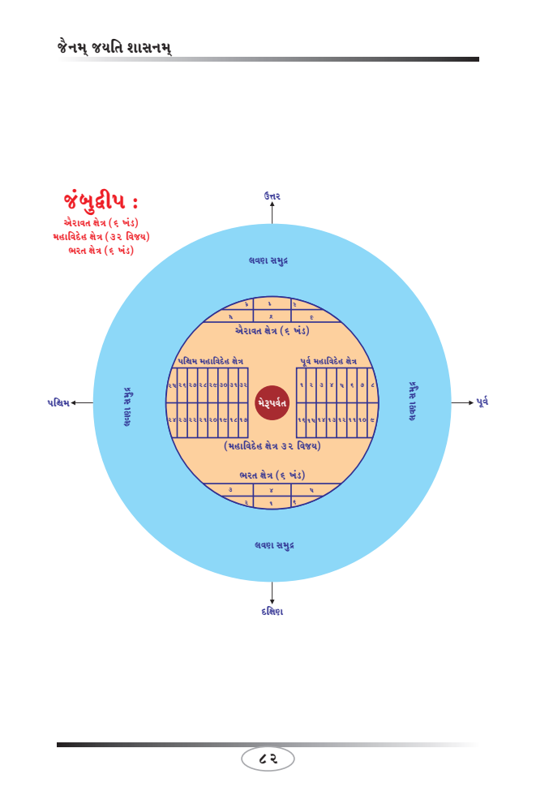

This book Unicode and EPUB Converted by Parth Shah (myself) free of charge as Gyaanseva. You can contact on caparthdshah@gmail.com for further details. You may quote reference "Jain Website"
મનુષ્ય જન્મક્ષેત્ર જંબુદ્વીપ, ઘાતકીખંડ, અર્ધ (અડધું) પુષ્કરદ્વીપ, 56 અંતરદ્વીપજ. એકંદરે 45 લાખ યોજન ક્ષેત્રમાં જ જન્મ થાય છે, પછીના અસંખ્ય દ્વીપોમાં મનુષ્યના જન્મ થતાં જ નથી.
જંબુદ્વીપમાં એક ભરત ક્ષેત્ર, એક ઐરાવત ક્ષેત્ર, એક મહાવિદેહ ક્ષેત્ર (પૂર્વ મહાવિદેહ ક્ષેત્ર અને પશ્ચિમ મહાવિદેહ ક્ષેત્ર) હોય છે તેમજ એક મેરુપર્વત હોય છે. જંબુદ્વીપ 1,00,000 યોજન ક્ષેત્ર પ્રમાણ લંબાઇ અને પહોળાઇમાં છે.
ઘાતકીખંડ વલય આકારનો દ્વીપ છે. વલય એટલે બંગડી આકાર. જેમાં વલયના એક છેડે લવણ સમુદ્ર અને બીજે છેડે કાલોદધિ સમુદ્રથી ઘેરાયેલો છે. ઘાતકીખંડમાં બે ભરતક્ષેત્ર, બે ઐરાવતક્ષેત્ર, બે મહાવિદેહક્ષેત્ર હોય છે તેમજ બે મેરુપર્વત હોય છે. ઘાતકીખંડ વલય આકારમાં દરેક ભાગ 4,00,000 યોજન પ્રમાણ પહોળાઇમાં છે.
પુષ્કરદ્વીપ વલય આકારનો દ્વીપ છે. વલય એટલે બંગડી આકાર. જેમાં વલયના એક છેડે કાલોદધિ સમુદ્ર અને બીજે છેડે પુષ્કર સમુદ્રથી ઘેરાયેલો છે. પુષ્કરદ્વીપમાં બે ભરતક્ષેત્ર, બે ઐરાવતક્ષેત્ર, બે મહાવિદેહક્ષેત્ર હોય છે તેમજ બે મેરુપર્વત હોય છે.
પુષ્કરદ્વીપ વલય આકારમાં દરેક દિશાથી પહોળાઇમાં 16,00,000 યોજન પ્રમાણમાં છે. જેમાં દરેક દિશામાં સોળ લાખ યોજન પહોળાઇના વચ્ચે માનુષોત્તર પર્વત સમગ્ર પુષ્કરદ્વીપમાં વલય આકારે ઘેરાયેલા હોવાથી તેના બે ભાગ પડે છે.
78
Page 83
જૈન વિજ્ઞાન
મનુષ્ય જીવ - 3:
આપને જૈન ભૂગોળ સમજાવવાનું કારણ એજ છે કે મનુષ્યનો જન્મ ક્યા ક્ષેત્રમાં થાય છે! સામાઇક, પ્રતિક્રમણમાં આવા શબ્દો સાંભળ્યા જ હશે! ગઇકાલના લેખથી આગળ...
માનુષોત્તર પર્વતથી પુષ્કરદ્વીપ અંદરનો વિભાગ જંબુદ્વીપ તરફનો 8,00,000 યોજન દરેક દિશાએ અને બહારનો વિભાગ પુષ્કર સમુદ્ર તરફનો 8,00,000 યોજન પ્રમાણમાં હોય છે, પુષ્કરદ્વીપના બહારના વિભાગ જ્યાં મનુષ્યનો જન્મ થતો જ નથી.
એકંદરે જંબુદ્વીપ પૂર્વ દિશાથી ક્ષેત્ર ગણતાં (2 લાખ લવણ સમુદ્ર અ 4 લાખ ઘાતકીખંડ અ 8 લાખ કાલોદધિ સમુદ્ર અ 8 લાખ અડધો પુષ્કરદ્વીપ કુલ 22 લાખ ક્ષેત્ર થાય.
તે જ પ્રમાણે જંબુદ્વીપ પશ્ચિમ દિશાથી ક્ષેત્ર ગણતાં (2 લાખ લવણ સમુદ્ર અ 4 લાખ ઘાતકીખંડ અ 8 લાખ કાલોદધિ સમુદ્ર અ 8 લાખ અડધો પુષ્કરદ્વીપ કુલ 22 લાખ ક્ષેત્ર થાય.
જંબુદ્વીપ 1 લાખ + જંબુદ્વીપથી પૂર્વ દિશાએ માપતાં અર્ધ પુષ્કરદ્વીપ સુધી 22 લાખ યોજન + જંબુદ્વીપથી પશ્ચિમ દિશાએ માપતાં અર્ધ પુષ્કરદ્વીપ સુધી 22 લાખ યોજન થાય. આમ કુલ 45 લાખ યોજન (1 + 22 + 22 = 45 લાખ યોજન) લંબાઇ અને પહોળાઇ વિસ્તારમાં જ મનુષ્યનો જન્મ થાય છે તેમજ 45 લાખ યોજન ક્ષેત્રની બહારના અન્ય કોઇ ક્ષેત્રમાં મનુષ્યનો જન્મ થતો જ નથી!
ચિત્રમાં 45 લાખ યોજન પ્રમાણ જણાવવાનો શરળ પ્રયાસ છે. આપને શરળતાથી સમજાઇ જશે. ભૌગોલિક રચના ચિત્ર મુજબ વ્યવસ્થિત રીતે સમજી શકો તો આગળ આપને ઘણો જ ઉપયોગી થઇ જશે.
79
Page 84
જૈનમ્ જયતિ શાસનમ્
મનુષ્ય જીવ - 4:
મનુષ્ય પંચેન્દ્રિય જીવ કહેવાય તેમજ મહાન પુણ્યોદયે મનુષ્ય જન્મ મળે! મનુષ્ય ભવ એકમાત્ર મોક્ષ પ્રાપ્તિ માટે સહાયક બને છે. જેમાં કર્મ કરવાની સ્વતંત્રતાને કારણે પાપ, પુણ્ય અને કર્મ નિર્જરા કરી શકવાની શકિત અને સામર્થ્ય ધરાવે છે.
જંબુદ્વીપ, ઘાતકીખંડ અને અર્ધ પુષ્કરદ્વીપના ભરતક્ષેત્ર અને ઐરાવતક્ષેત્રમાં સદાય 6 આરા પ્રવર્તાય છે, જ્યારે મહાવિદેહ ક્ષેત્રમાં સદાય ચોથો આરો વર્તાય છે. 6 આરામાં અવસર્પિણી કાળ અને ઉત્સર્પિણી કાળ પ્રમાણે તેનો પ્રભાવ અને મનુષ્ય દ્વારા કર્મ થતાં જ રહે છે. મોક્ષમાં જવા માટે ત્રીજો અને ચોથો આરો જ મહત્વનો છે, બાકીના આરામાં શુભ અને અશુભ કર્મ બંધ થતાં રહે છે તેમજ શુભ અને અશુભ કર્મ ઉદયમાં આવતાં તેને ભોગવતા રહેવું પડે છે.
અવસર્પિણી કાળ અને ઉત્સર્પિણી કાળનું વર્ણન જૈન વિજ્ઞાન 66 થી 74 સુધીમાં વર્ણન થયેલ છે. દેવોથી પણ કોઇ શકિતમાન હોય તો તે અરિહંત પરમાત્મા છે. અરિહંત પરમાત્મા એટલા શકિતશાળી હોય છે કે 14 રાજલોકનો નાશ કરવો હોય તો પણ તેમના માટે શક્ય છે તેમજ 14 રાજલોકમાં દરેક જીવને મોક્ષમાં લઇ જવાની શકિત અને સામર્થ્ય પણ તેમનામાં છે, પરંતું તેઓ કુદરતથી વિરુદ્ધ કોઇ કાર્ય કરતાં જ નથી તેમજ તેમનો સ્વભાવ પણ નથી!
દરેક અવસર્પિણી કાળ અને ઉત્સર્પિણી કાળમાં મહામાનવ અને દિવ્ય મનુષ્યોમાં માત્ર 63 શલાકા પુરુષોનો જ સમાવેશ થાય છે. જેઓ વિશિષ્ટ પુણ્યના પ્રભાવે, તે તે નામકર્મના ઉદયે, વિશિષ્ટ યોગે જ જન્મ થાય છે.
80
Page 85
જૈન વિજ્ઞાન
મનુષ્ય જીવ - 5:
63 શલાકા પુરુષોમાં 24 તીર્થંકર, 12 ચક્રવર્તી, 9 બળદેવ, 9 વાસુદેવ, 9 પ્રતિવાસુદેવનો જન્મ અચૂક થાય છે તેમજ 11 રુદ્ર અને 9 નારદનો પણ જન્મ થાય છે પણ તેમનો 63 શલાકા પુરુષમાં ગણતરી થતી નથી.
જંબુદ્વીપના ભરતક્ષેત્રમાં 6 ખંડ હોય છે અને ઐરાવત ક્ષેત્રમાં 6 ખંડ હોય છે. મહાવિદેહ ક્ષેત્રની વચ્ચે મેરુપર્વત આવવાથી તે બે ભાગમાં વિભાજિત થાય છે. પૂર્વ મહાવિદેહ ક્ષેત્ર અને પશ્ચિમ મહાવિદેહ ક્ષેત્ર. પૂર્વ મહાવિદેહ ક્ષેત્રમાં 16 વિજય (નગર) હોય છે અને પશ્ચિમ મહાવિદેહ ક્ષેત્રમાં 16 વિજય (નગર) હોય છે. મહાવિદેહ ક્ષેત્રમાં કુલ (16 અ 16) 32 વિજય હોય છે.
ભરતક્ષેત્રમાં અવસર્પિણી કાળમાં ત્રીજા આરાના અંતે 1 (પ્રથમ) તીર્થંકર તેમજ ચોથા આરામાં 23 તીર્થંકરના જન્મ થાય છે. ઉત્સર્પિણી કાળમાં ત્રીજા આરામાં 23 તીર્થંકર અને ચોથા આરામાં શરુઆતના કાળમાં 1 (અંતિમ) તીર્થંકર જન્મ થાય છે.
ઐરાવતક્ષેત્રમાં અવસર્પિણી કાળમાં ત્રીજા આરાના અંતે 1 (પ્રથમ) તીર્થંકર તેમજ ચોથા આરામાં 23 તીર્થંકરના જન્મ થાય છે. ઉત્સર્પિણી કાળમાં ત્રીજા આરામાં 23 તીર્થંકર અને ચોથા આરામાં શરુઆતના કાળમાં 1 (અંતિમ) તીર્થંકર જન્મ થાય છે.
ભરતક્ષેત્ર અને ઐરાવતક્ષેત્રમાં કાળ (આરા) સમાન હોય છે. મેરુપર્વતથી
દક્ષિણ દિશા તરફ ભરતક્ષેત્ર અને ઉત્તર દિશા તરફ ઐરાવતક્ષેત્ર આવેલ છે.
81
Page 86
જૈનમ્ જયતિ શાસનમ્
જંબુદ્વીપ :
ઐરાવત ક્ષેત્ર (6 ખંડ) મહાવિદેહ ક્ષેત્ર (32 વિજય) ભરત ક્ષેત્ર (6 ખંડ)

મનુષ્ય જીવ - 6:
પૂર્વ મહાવિદેહ ક્ષેત્રમાં ઓછામાં ઓછા ર તીર્થંકર કુલ બે વિજય મળીને (1 વિજયમાં એક તીર્થંકર) અને વધુમાં વધુ 16 તીર્થંકર (દરેક વિજયમાં 1 તીર્થંકર, કુલ 16 વિજય ક્ષેત્ર) તે જ પ્રમાણે પશ્ચિમ મહાવિદેહ ક્ષેત્રમાં ઓછામાં ઓછા ર તીર્થંકર કુલ બે વિજય મળીને (1 વિજયમાં એક તીર્થંકર) અને વધુમાં વધુ 16 તીર્થંકર (દરેક વિજયમાં 1 તીર્થંકર, કુલ 16 વિજય ક્ષેત્ર) એકંદરે મહાવિદેહ ક્ષેત્રમાં ઓછામાં ઓછા 4 તીર્થંકર અને વધુમાં વધુ 32 તીર્થંકર પરમાત્મા વિચરે છે.
ઘાતકીખંડમાં બે (2) મેરુપર્વત આવેલ છે. જંબુદ્વીપથી પૂર્વ તરફના ઘાતકીખંડમાં વચ્ચે 1 મેરુપર્વત છે. ત્યાં ભૌગોલિક રચના જંબુદ્વીપ સમાન છે. તેમાં ભરતક્ષેત્ર, ઐરાવતક્ષેત્ર અને મહાવિદેહ ક્ષેત્ર (મેરુપર્વતના કારણે વિભાજીત છે). ત્યાં ભરતક્ષેત્રમાં 1 તીર્થંકર, ઐરાવતક્ષેત્રમાં 1 તીર્થંકર અને મહાવિદેહ ક્ષેત્રમાં ઓછામાં ઓછા (2 + 2) 4 તીર્થંકર અને વધુમાં વધુ (16 + 16) 32 તીર્થંકરના જન્મ થાય છે.
જંબુદ્વીપથી પશ્ચિમ તરફના ઘાતકીખંડમાં વચ્ચે 1 મેરુપર્વત છે. ત્યાં ભૌગોલિક રચના જંબુદ્વીપ સમાન છે. તેમાં ભરતક્ષેત્ર, ઐરાવતક્ષેત્ર અને મહાવિદેહ ક્ષેત્ર (મેરુપર્વતના કારણે વિભાજીત છે). ત્યાં ભરતક્ષેત્રમાં 1 તીર્થંકર, ઐરાવતક્ષેત્રમાં 1 તીર્થંકર અને મહાવિદેહ ક્ષેત્રમાં ઓછામાં ઓછા (2 + 2) 4 તીર્થંકર અને વધુમાં વધુ (16 + 16) 32 તીર્થંકરના જન્મ થાય છે.
83
Page 88
જૈનમ્ જયતિ શાસનમ્
મનુષ્ય જીવ - 7:
પુષ્કરદ્વીપમાં બે (2) મેરુપર્વત આવેલ છે. જંબુદ્વીપથી પૂર્વ તરફના પુષ્કરદ્વીપમાં વચ્ચે 1 મેરુપર્વત છે. ત્યાં ભૌગોલિક રચના જંબુદ્વીપ સમાન છે. તેમાં ભરતક્ષેત્ર, ઐરાવતક્ષેત્ર અને મહાવિદેહ ક્ષેત્ર (મેરુપર્વતના કારણે વિભાજીત છે). ત્યાં ભરતક્ષેત્રમાં 1 તીર્થંકર, ઐરાવતક્ષેત્રમાં 1 તીર્થંકર અને મહાવિદેહ ક્ષેત્રમાં ઓછામાં ઓછા (2 + 2) 4 તીર્થંકર અને વધુમાં વધુ (16 + 16) 32 તીર્થંકરના જન્મ થાય છે.
જંબુદ્વીપથી પશ્ચિમ તરફના પુષ્કરદ્વીપમાં વચ્ચે 1 મેરુપર્વત છે. ત્યાં ભૌગોલિક રચના જંબુદ્વીપ સમાન છે. તેમાં ભરતક્ષેત્ર, ઐરાવતક્ષેત્ર અને મહાવિદેહ ક્ષેત્ર (મેરુપર્વતના કારણે વિભાજીત છે). ત્યાં ભરતક્ષેત્રમાં 1 તીર્થંકર, ઐરાવતક્ષેત્રમાં 1 તીર્થંકર અને મહાવિદેહ ક્ષેત્રમાં ઓછામાં ઓછા (2 + 2) 4 તીર્થંકર અને વધુમાં વધુ (16 + 16) 32 તીર્થંકરના જન્મ થાય છે.
એકંદરે અઢીદ્વીપ (જંબુદ્વીપ પૂર્ણ અ ઘાતકીખંડ પૂર્ણ અ પુષ્કરદ્વીપ અડધો)માં
કુલ મળી 5 - ભરતક્ષેત્ર, 5 - ઐરાવતક્ષેત્ર અને 5 - મહાવિદેહ ક્ષેત્ર થાય છે.
વર્તમાનમાં અઢીદ્વીપ (મનુષ્ય જન્મક્ષેત્ર) પ - મહાવિદેહ ક્ષેત્ર મળી કુલ 20 તીર્થંકર પરમાત્મા વિચરે છે. (પૂર્વ મહાવિદેહ ક્ષેત્રમાં 2 તીર્થંકર અને પશ્ચિમ મહાવિદેહ ક્ષેત્રમાં 2 તીર્થંકર) એટલે 4 તીર્થંકર X 5 મહાવિદેહ ક્ષેત્ર = 20 તીર્થંકર પરમાત્મા.
84
Page 89
જૈન વિજ્ઞાન
મનુષ્ય જીવ - 8:
જંબુદ્વીપમાં ભરતક્ષેત્રમાં તીર્થંકર પરમાત્મા વિચરતા હોય તે સમયે બીજા તીર્થંકર પરમાત્માનો જન્મ ક્યારેય થાય નહીં. તે જ પ્રમાણે જંબુદ્વીપમાં ઐરાવતક્ષેત્રમાં એક તીર્થંકર પરમાત્મા વિચરે.
જંબુદ્વીપમાં પૂર્વ મહાવિદેહ ક્ષેત્રમાં એક વિજયમાં માત્ર એક તીર્થંકર પરમાત્મા વિચરે ત્યાં સુધી બીજા તીર્થંકર પરમાત્માનો જન્મ ન થાય. તે જ પ્રમાણે જંબુદ્વીપમાં પશ્ચિમ મહાવિદેહ ક્ષેત્રમાં એક વિજયમાં માત્ર એક તીર્થંકર પરમાત્મા વિચરે ત્યાં સુધી બીજા તીર્થંકર પરમાત્માનો જન્મ ન થાય.
અજિતનાથ ભગવાનના સમયમાં ઉત્કૃષ્ટ 170 તીર્થંકર પરમાત્મા વિચરતા હતાં. જંબુદ્વીપમાં ભરતક્ષેત્રમાં 1 તીર્થંકર, ઐરાવતક્ષેત્રમાં 1 તીર્થંકર અને મહાવિદેહ ક્ષેત્રના 32 વિજય (નગર)ના દરેક વિજયમાં 1 તીર્થંકર મળી 32 તીર્થંકર કુલ મળી 34 તીર્થંકર જંબુદ્વીપમાં વિચરતાં હતાં.
જંબુદ્વીપથી પૂર્વ તરફના ઘાતકીખંડના મેરુપર્વતના ભરતક્ષેત્રમાં 1 તીર્થંકર, ઐરાવતક્ષેત્રમાં 1 તીર્થંકર અને મહાવિદેહ ક્ષેત્રના 32 વિજય (નગર)ના દરેક વિજયમાં 1 તીર્થંકર મળી 32 તીર્થંકર કુલ મળી 34 તીર્થંકર વિચરતાં હતાં.
જંબુદ્વીપથી પશ્ચિમ તરફના ઘાતકીખંડના મેરુપર્વતના ભરતક્ષેત્રમાં 1 તીર્થંકર, ઐરાવતક્ષેત્રમાં 1 તીર્થંકર અને મહાવિદેહ ક્ષેત્રના 32 વિજય (નગર)ના દરેક વિજયમાં 1 તીર્થંકર મળી 32 તીર્થંકર કુલ મળી 34 તીર્થંકર વિચરતાં હતાં.
85
Page 90
જૈનમ્ જયતિ શાસનમ્
મનુષ્ય જીવ - 9:
જંબુદ્વીપથી પૂર્વ તરફના પુષ્કરદ્વીપના મેરુપર્વતના ભરતક્ષેત્રમાં 1 તીર્થંકર, ઐરાવતક્ષેત્રમાં 1 તીર્થંકર અને મહાવિદેહ ક્ષેત્રના 32 વિજય (નગર)ના દરેક વિજયમાં 1 તીર્થંકર મળી 32 તીર્થંકર કુલ મળી 34 તીર્થંકર વિચરતાં હતાં.
જંબુદ્વીપથી પશ્ચિમ તરફના પુષ્કરદ્વીપમાં મેરુપર્વતના ભરતક્ષેત્રમાં 1 તીર્થંકર, ઐરાવતક્ષેત્રમાં 1 તીર્થંકર અને મહાવિદેહ ક્ષેત્રના 32 વિજય (નગર)ના દરેક વિજયમાં 1 તીર્થંકર મળી 32 તીર્થંકર કુલ મળી 34 તીર્થંકર વિચરતાં હતાં. આમ કુલ મળી 170 તીર્થંકર (34 તીર્થંકર X પ ક્ષેત્ર = 170 તીર્થંકર) પરમાત્મા ઉત્કૃષ્ટ (વધુમાં વધુ) પણે હોય છે.
એવું ક્યારેય નથી બનતું કે એક તીર્થંકર પરમાત્મા, બીજા ક્ષેત્રના તીર્થંકરને સામેથી મળી શકે! અઢીદ્વીપમાં અચૂક તીર્થંકર પરમાત્માની હાજરી હોય જ! એટલે કોઇ એમ ન કહી શકે કે, આ તિરછાલોક (પૃથ્વીલોક) ઉપર ભગવાન નથી!
ચાર ઘાતિકર્મોનો ક્ષય થતાં જ કેવળજ્ઞાન પ્રગટ થાય છે અને ચાર અઘાતિ કર્મોનો ક્ષય થતાં જ નિર્વાણ થઇ કેવળજ્ઞાની મહાત્મા સિદ્ધશીલાએ બિરાજમાન થાય છે. હવે પછી તેમને સંસારમાં જન્મ-મરણ થતાં નથી. ધર્મની ધૂરા, પ્રભાવના તીર્થંકર પરમાત્મા કરે છે. તીર્થંકર પરમાત્માની ગેરહાજરીમાં આચાર્ય ભગવંતો શાસનની ધૂરા સંભાળે છે. અઢીદ્વીપમાં અવસર્પિણી કાળમાં છઠ્ઠો આરો અને ઉત્સર્પિણી કાળમાં પ્રથમ આરામાં પ - ભરતક્ષેત્રમાં અને પ - ઐરાવતક્ષેત્રમાં ધર્મ વિચ્છેદ થાય છે.
86
Page 91
જૈન વિજ્ઞાન
મનુષ્ય જીવ - 10:
અઢીદ્વીપ (5-ભરતક્ષેત્ર, 5-ઐરાવતક્ષેત્ર અને 5-મહાવિદેહ ક્ષેત્ર)માં ઓછામાં ઓછા 20 તીર્થંકર પરમાત્મા વિચરતા હોય છે અને વધુમાં વધુ એક સમયે 170 તીર્થંકર પરમાત્મા વિચરતા હોય છે, આપણે વિસ્તારથી જાણ્યું.
તીર્થંકર પરમાત્મા અનંત પુણ્યના સ્વામી હોય છે. ચાર ઘાતિકર્મનો ક્ષય થતાં જ તેમને કેવળજ્ઞાન પ્રગટ થાય છે. હવે તેઓ અરિહંત કહેવાય છે. કેવળજ્ઞાન પ્રાપ્ત થતાં જ સૌધર્મેન્દ્રના આદેશથી સેવક દેવતાઓ દ્વારા સહુ પ્રથમ સમવસરણની રચના થાય છે. સમવસરણમાં દેવો, મનુષ્યો અને તિર્યંચ જીવો પ્રભુની દેશના સાંભળવા સહર્ષ પધારે છે. અરિહંત પરમાત્મા સમવસરણની વચ્ચે આવેલ બેઠક સ્થાને પોતાના દેહપ્રમાણથી 12 ઘણાં ઊંચા ચૈત્યવૃક્ષ (અશોકવૃક્ષ)ની ફરતે ‘ ણમો તિત્થસ્સ’ એટલે તીર્થને મારા નમસ્કાર હોજો કહી, ત્રણ પ્રદક્ષિણા આપી સ્થાન ગ્રહણ કરે છે. આગળ જતાં સમવસરણ વિશે પણ વિસ્તારથી જાણીશું.
મનુષ્ય જીવમાં સૌથી ઉત્કૃષ્ટ કોટીના કોઇ જીવ હોય તો તેઓ તીર્થંકર પરમાત્મા હોય છે. દરેક જીવનું અવતરણ નિગોદથી જ થાય છે. સમગ્ર સંસાર (નરક, તિર્યંચ, મનુષ્ય અને દેવ) અને અસંસારી, સિદ્ધશીલાએ બિરાજમાન સિદ્ધ ભગવંતો અચૂક નિગોદથી જ વ્યવહાર રાશીમાં પ્રવેશ કરે છે.
નિગોદથી એકેન્દ્રિય, બેઇન્દ્રિય, તેઇન્દ્રિય, ચઉરેન્દ્રિય અને પંચેન્દ્રિયમાં જીવને જન્મ-મરણના ફેરા અચૂકપણે થાય જ! એવું ક્યારેય નથી થયું અને થશે કે, નિગોદથી આવેલો જીવ તરત જ મનુષ્ય બને અને તે જ ભવે મોક્ષમાં જાય!
87
Page 92
જૈનમ્ જયતિ શાસનમ્
મનુષ્ય જીવ -11 : 34 અતિશય-1
અતિશય એટલે અલૌકિક શકિત, ચડિયાતાપણું, શ્રેષ્ઠતા, વિશિષ્ટતા વગેરે થાય છે. અતિશય તીર્થંકર નામકર્મના ઉદય વાળા કેવળજ્ઞાની ભગવંતોને જ હોય છે. તીર્થંકર પરમાત્મા કેટલાં મહાન પુણ્યના સ્વામી હશે? કે, અલૌકિક શકિત માત્ર તેમને જ પ્રગટ થાય અન્ય કોઇ કેવળી ભગવંતોને નહીં! જેમની સેવા અને દર્શન કરવાને ઝંખતા 64 ઇન્દ્રો સહપરિવાર સતત દેવલોકથી પ્રભુની વિહારયાત્રા અને સમવસરણમાં થતી દેશના સાંભળવા ઉત્સુક હોય છે. અદ્ભૂત!
34 અતિશયમાંથી 5 અતિશય તીર્થંકર પરમાત્માને જન્મથી જ હોય છે. 15 અતિશય કેવળજ્ઞાન પ્રગટ થતાં જ શરુ થાય છે અને 14 અતિશય દેવો દ્વારા પ્રભુની સેવા અને પ્રભાવના સ્વરુપે હોય છે.
1) વાળ, દાઢી, મૂછ, રોમ અને હાથ-પગના નખ પ્રમાણસર રહે અર્થાત્ તેના પ્રમાણથી અધિક વૃદ્ધિ ક્યારેય ન થાય.
2) સદાય શરીર નિરોગી રહે એટલે રોગ વગેરે ક્યારેય ઉત્પન્ન ન થાય, મળ ઉત્પન્ન ન થાય અને સદાય નિર્મળ શરીર હોય છે.
3) શરીરમાં લોહી અને માંસનો રંગ ગાયના દૂધ સમાન સફેદ રંગનું હોય છે.
4) ઉચ્છવાસ પદ્મકમળ સમાન સુગંધિત હોય. તીર્થંકર પરમાત્મા શ્વાસમાં પ્રાણવાયુ લીધા પછી ઉચ્છવાસ સ્વરુપે નીકળતી હવામાં કમળના ફુલની મંદ સુગંધ અચૂક હોય છે.
5) આહાર અને નિહાર નરી આંખે ન દેખાય એટલે આપણે ભોજન લઇએ છીએ તેવું તેમનું ભોજન ન હોય.
88
Page 93
જૈન વિજ્ઞાન
મનુષ્ય જીવ -12 : 34 અતિશય-2
6) તીર્થંકર પરમાત્મા જ્યાં પણ વિચરે (વિહાર) ત્યારે આકાશમાં સદાય ધર્મચક્ર સાથે જ ફરે.
7) તીર્થંકર પરમાત્મા જ્યાં પણ વિચરે ત્યાં આકાશમાં તેમના મસ્તક ઉપર સદાય છત્ર હોય.
8) આકાશમાં સદાય ઉત્તમ કોટીના સફેદ ચામરો દેવો દ્વારા વીંજાતા હોય છે.
9) આકાશ સમાન નિર્મળ સ્ફટિકરત્નના પાદપીઠયુકત સિંહાસન હોય.
10) આકાશમા હજાર નાની ધ્વજાઓથી યુકત ઇન્દ્રધ્વજ તીર્થંકર પરમાત્માની
સદાય આગળ ચાલે.
11) જ્યાં જ્યાં તીર્થંકર પરમાત્મા સ્થિરતા (રોકાય) કરે, સ્થાન ગ્રહણ કરે (બેસવું) ત્યાં ભવનપતિ દેવલોકના યક્ષ દેવો દ્વારા પાંદડાં, ફુલ, વેલડીઓથી વ્યાપ્ત, છત્ર, ધ્વજા, ઘંટ અને પતાકાથી યુકત શ્રેષ્ઠ અશોકવૃક્ષ બનાવે છે.
12) મસ્તકની કંઇક પાછળ મુગટના સ્થાને પ્રકાશ મંડળ (આભા મંડળ) હોય છે, જે અંધકારમાં પણ (રાત્રીના સમયે) દસે દિશાઓને પ્રકાશિત કરે છે.
13) તીર્થંકર પરમાત્મા જ્યાં વિહાર (વિચરણ) કરે, ત્યાંનો ભૂમિભાગ એકસરખો
(બહુસમ) અને નયનરમ્ય (રમણીય) બની જાય છે.
14) વિહાર ભૂમિમાં કાંટા હોય તો, તે પોતાની મેળે ઊંધા થઇ જાય (કાંટાનો
ભાગ જમીનની દિશામાં થઇ જાય).
15) શરીરને અનુકૂળ સુખદ સ્પર્શવાળું વાતાવરણ થઇ જાય.
16) તીર્થંકર પરમાત્મા જ્યાં વિચરે છે ત્યાંની 1 યોજન ભૂમિ ઠંડી અને સુખકારી
સ્પર્શનાવાળું અને સુગંધિત પવન બધી દિશાઓમાં ફેલાઇ જાય છે.
89
Page 94
જૈનમ્ જયતિ શાસનમ્
મનુષ્ય જીવ -13 : 34 અતિશય-3
17) દેવો દ્વારા મંદ, સુગંધિત પાણીના વરસાદથી આકાશમાં ઉડતા રજકણો અને ભૂમિ ઉપર રહેલી ધૂળ શાંત (સ્થિર) થઇ જાય એટલે વાતાવરણ ધૂળ વગરનું નિર્મળ થઇ જાય છે.
18) પાંચ વર્ણના સુગંધિત ફુલોથી ભૂમિથી ગોઠણ સુધીનો ભાગ દેવો દ્વારા
ફુલોથી ઢંકાઇ જાય છે.
19) અપ્રિય શબ્દો, સ્પર્શ, રસ, રૂપ અને ગંધનો અભાવ થઇ જાય.
20) પ્રિય શબ્દો, સ્પર્શ, રસ, રૂપ અને ગંધનો પ્રાદુર્ભાવ થઇ જાય છે.
21) ધર્મમય દેશના આપતી વખતે પ્રભુની વાણી એક યોજન સુધી સંભળાય અને સાંભળનાર દરેક જીવને હૃદયમાં ઉતરી જાય તેવો સ્વર (અવાજ) હોય છે.
22) તીર્થંકર પરમાત્મા દ્વારા ધર્મનો ઉપદેશ અર્ધમાગધી (મગધ દેશની માગધી (પ્રાકૃત) ભાષા અને દેવોની સંસ્કૃત ભાષાનું મિશ્રણ) ભાષામાં હોય છે.
23) અર્ધમાગધી ભાષા દરેક આર્ય અને અનાર્ય મનુષ્યો, બે પગવાળા પક્ષીઓ, ચાર પગવાળા પશુઓ, પેટથી ચાલનારા સાપ વગેરે જીવો માટે હિતકારી, કલ્યાણકારી, સુખદ તેમજ દરેક જીવની ઇચ્છીત ભાષામાં પોતાની મેળે પરિવર્તિત થઇ જાય છે.
24) પરસ્પર જીવો સાથે અગાઉ બંધાયેલા વેર, વેરયુકત મનુષ્યો, દેવો, અસુર, નાગ, સુપર્ણ, યક્ષ, રાક્ષસ, કિન્નર, કિંપુરુષ, ગરુડ, ગંધર્વ અને મહોરગ દેવો પણ તીર્થંકર પરમાત્માના ચરણમાં પરસ્પર થયેલા વેરને ભૂલી શાંતચિત્તથી, આનંદથી તેમજ શુભભાવથી પ્રભુની વાણી સાંભળે છે.
90
Page 95
જૈન વિજ્ઞાન
મનુષ્ય જીવ -14 : 34 અતિશય-4
25) પ્રભુની દેશના સાંભળવા અન્ય ધર્મના ગુરુઓ, વકતાઓ પણ પ્રભુને
સાંભળી ભાવથી વંદના કરે છે.
26) ભગવાન પાસે આવેલા અન્ય ધર્મના લોકો પ્રભુની વાણી (દેશના)
સાંભળીને શંકારહિત બની નિરુત્તર બની જાય છે.
27) જ્યાં જ્યાં તીર્થંકર પરમાત્મા વિહાર કરતાં હોય ત્યાં ત્યાં 25 યોજન સુધી
કોઇપણ જાતનો ભય ન હોય.
28) મનુષ્યને મારનાર મહામારી (પ્લેગ, કોરોના વગેરે) ભયંકર બીમારી ન
હોય.
29) સ્વચક્ર - પોતાના રાજ્યની સેનાનો ભય ન હોય.
30) પરચક્ર - શત્રુ સેનાનો ભય ન હોય.
31) અતિવૃષ્ટિ - ભારે વરસાદ ન હોય.
32) અનાવૃષ્ટિ ન હોય - ઓછો વરસાદ ન પડે (પ્રમાણસર વરસાદ પડે).
33) દુર્ભિક્ષ - દુષ્કાળ ન પડે.
34) તીર્થંકર પરમાત્માના વિહાર શરુ થાય તે પહેલાં થયેલી વ્યાધિ વગેરે ઉપદ્રવો
પણ જલદી શાંત થઇ જાય છે.
તીર્થંકર નામ કર્મનો ઉદય કેવળજ્ઞાન ઉત્પન્ન થાય ત્યારે હોય છે માટે અતિશયનો સંબંધ કેવળજ્ઞાન પ્રગટ થાય પછી વધારે હોય છે. 34 અતિશયમાંથી 5 અતિશય તીર્થંકર પરમાત્માને જન્મથી જ હોય છે. 15 અતિશય કેવળજ્ઞાન પ્રગટ થતાં જ શરુ થાય છે અને 14 અતિશય દેવો દ્વારા તીર્થંકર પરમાત્માના સેવાના ભાવથી તેમજ પ્રભાવને વિસ્તારવા હર્ષોલ્લાસથી પ્રભાવના સ્વરુપે હોય છે.
91
Page 96
જૈનમ્ જયતિ શાસનમ્
મનુષ્ય જીવ - 15 : તીર્થંકર પરમાત્માની વચન (વાણી)ના ગુણ - 35
તીર્થંકર પરમાત્માની વાણી રાગ-દ્વેષ રહિત સત્ય વચનયુકત હોય છે. મુખ્યત્વે આપણી વાણીમાં સ્વાર્થના કારણે પોતાના જ હિતલક્ષી કાર્યોનો ઉદ્દેશ્ય હોવાથી વાણીનો દુરુપયોગ વધુ થાય, સંબંધોમાં કડવાશ ઉત્પન્ન થાય તેમજ જીવ પ્રતિ જીવ વેરની ભાવના વધે છે. નીત નવા કર્મ બંધ થતાં રહે છે. વાણીમાં મીઠાશ હોય, સર્વ જીવોના કલ્યાણની ભાવના હોય તો વાણીનો સદુપયોગ શુભ કર્મ બાંધવામાં સહાયરુપ બને છે. અનંતપુણ્યના સ્વામી, તારક તીર્થંકર પ્રભુની વાણીમાં કેવા દિવ્ય ગુણો (35-વચન અતિશય) અને વિશેષતા હોય છે તે જાણીએ...
1) સંસ્કારોપેતત્વઃ વચનોનું વ્યાકરણ સંસ્કાર યુકત હોય છે.
2) ઉદાત્તત્વઃ ઉચ્ચ સ્વરથી પરિપૂર્ણ હોય છે.
3) ઉપચારોપેતત્વઃ ગ્રામીણતાથી રહિત હોય, ગામઠી શબ્દ ન હોય.
4) ગંભીર શબ્દત્વઃ મેઘ સમાન ગંભીર શબ્દોથી યુકત હોય છે.
5) અનુનાદિત્વઃ પ્રતિધ્વનિ ઉપજાવનારાં વચન હોય છે.
6) દક્ષિણત્વઃ સરળતા યુકત વચન હોય છે.
7) ઉપનીત રાગત્વઃ યથા ઉચિત રાગ-માલકોશ વગેરે રાગ-રાગિણીથી યુકત હોય છે.
ઉપરોકત ક્રમ નં. 1 થી 7 વચન અતિશય શબ્દ સૌંદર્યની અપેક્ષાથી જાણવા જોઇએ.
8) મહાર્થત્વઃ મહાન અર્થવાળા વચન હોય છે.
9) અવ્યાહત પૂર્વાપરત્વઃ પૂર્વાપર અવિરોધી અર્થવાળા હોય છે.
92
Page 97
જૈન વિજ્ઞાન
મનુષ્ય જીવ - 16 : તીર્થંકર પરમાત્માની વચન (વાણી)ના ગુણ - 35
10) શિષ્ટત્વઃ વકતાની શિષ્ટતાના સૂચક હોય છે.
11) અસંદિગ્ધત્વઃ સંદેહ રહિત નિશ્ચિત અર્થના પ્રતિપાદક હોય છે.
12) અપહ્યતાન્યોત્તરત્વઃ પરદત્ત દૂષિત આક્ષેપોના નિવારક વચન હોય છે.
13) હૃદયગ્રાહિત્વઃ શ્રોતા (સાંભળનાર)ના હૃદયગ્રાહી (મનોહર) વચન હોય છે.
14) દેશ કાલોચિતત્વઃ દેશ કાલને અનુકૂળ અવસર ઉચિત વચન હોય છે.
15) તત્ત્વાનુરુપત્વઃ વિવક્ષિત વસ્તુ સ્વરુપનાં અનુરૂપ વચન હોય છે.
16) અપ્રકીર્ણ પ્રસૃતત્વઃ નિરર્થક વિસ્તારથી રહિત સુસંબંધ વચન હોય છે.
17) અન્યોન્ય પ્રગૃહિતઃ પરસ્પર અપેક્ષા રાખનાર પદો અને વાક્યોથી યુકત હોય
છે.
18) અભિજાતત્વઃ વકતાની કુલીનતા અને શાલીનતાના સૂચક હોય છે.
19) અતિસ્નિગ્ધ મધુરત્વઃ અત્યંત સ્નેહથી ભરેલા મધુરતા (મીઠાશ) યુકત હોય
છે.
20) અપરમર્મ વેધિત્વઃ બીજાના મર્મ ઉઘાડનાર વચન ન હોય.
21) અર્થધર્માભ્યાસોપેતત્વઃ અર્થ અને ધર્મના અભ્યાસથી યુકત હોય છે.
22) ઉદારત્વઃ તુચ્છતા રહિત અને ઉદારતા યુકત હોય છે.
23) પરનિન્દાત્મોત્કર્ષ વિપ્રમુકતત્વઃ બીજાની નિંદા અને પોતાની પ્રશંસા રહિત
હોય છે.
93
Page 98
જૈનમ્ જયતિ શાસનમ્
મનુષ્ય જીવ - 17 : તીર્થંકર પરમાત્માની વચન (વાણી)ના ગુણ - 35
24) ઉપગત શ્લાદ્યત્વઃ જેને સાંભળીને લોકો પ્રશંસા કરે એવા વચન હોય છે.
25) અનપનીતત્વઃ કાલ, કારક, લિંગ, પ્રત્યય આદિ વ્યાકરણના દોષ રહિત હોય
છે.
26) ઉત્પાદિતાછિન્ન કૌતુહલત્વઃ ઉપદેશના વિષયમાં શ્રોતાજનોને નિરંતર
કુતૂહલ, જિજ્ઞાસા ઉત્પન્ન કરાવનાર હોય છે.
27) અદ્ભૂતત્વઃ આશ્ચર્યકારક અદ્ભૂત નવા નવા વચન પ્રયોગ હોય છે.
28) અનતિ વિલમ્બિતત્વઃ અતિ વિલંબ રહિત ધારા પ્રવાહથી બોલતા હોય છે.
29) વિભ્રમાદિ વિમુકતઃ મનની ભ્રાંતિ, વિક્ષેપ-ચિત્તની ચંચળતા અને રોષ, ભય,
અભિલાષા આદિ માનસિક દોષો રહિત હોય છે.
30) અનેક જાતિ સંશ્રયાદ્વિચિત્રત્વઃ અનેક પ્રકારે વર્ણનીય વસ્તુ સ્વરૂપનું વર્ણન
કરનાર વિચિત્ર વચન હોય છે.
31) આહિત વિશેષત્વઃ સામાન્ય વચનોથી કંઇક વિશેષતા યુકત વચન હોય છે.
32) સાકારત્વઃ પૃથક્ પૃથક્ વર્ણ, પદ, વાક્ય વડે આકાર પ્રાપ્ત વચન હોય છે.
33) સત્ત્વ પરિગૃહિતત્વઃ સાહસથી પરિપૂર્ણ વચન હોય છે.
34) અપરિખેદિત્વઃ ખિન્નતાથી રહિત વચન હોય છે.
35) અવ્યુચ્છેદિત્વઃ વિવક્ષિત અર્થની સમ્યક્ સિદ્ધિ થવા સુધી અવિચ્છિન્ન
પ્રવાહવાળા વચન હોય છે.
તીર્થંકર પરમાત્માના વચન અતિશય ક્રમ નં. 8 થી 35 ગૌરવની અપેક્ષા રાખે છે. આવા ગુણયુકત વચન સાંભળનારમાં પણ ગુણો જ ઉત્પન્ન કરનાર હોય છે તેમજ સાંભળનારનું હિત કરાવનાર હોય છે.
94
Page 99
જૈન વિજ્ઞાન
મનુષ્ય જીવ - 18 : તીર્થંકર પરમાત્માના દેહની વિશેષતા-1
તીર્થંકર પરમાત્મા સામાન્ય મનુષ્યથી અલગ વિશેષ ગુણધર્મથી મહામાનવ હોય છે. સ્વાભાવિક છે કે, પરમાત્માનું દેહ (શરીર) કેવું હશે? પ્રભુના 34 અતિશય (અલૌકિક શકિત) અને પ્રભુના 35 વચન અતિશય (વાણીના 35 ગુણ) વિશે વિસ્તૃત માહિતી મેળવી. હવે પરમાત્માની દેહ રચના વિશે જાણીએ...
વધુ... જૈન વિજ્ઞાન-93
95
Page 100
જૈનમ્ જયતિ શાસનમ્
મનુષ્ય જીવ - 19 : તીર્થંકર પરમાત્માના દેહની વિશેષતા-2
10) માંસઃ શરીરમાં માંસ રોગમુકત, શરીરગત, સર્વોત્તમ ગુણયુકત, અત્યંત
સફેદ અને અનુપમ હોય છે.
11) શરીરઃ પરસેવો, શરીર ઉપર જામેલા સુકો કે ભીનો મેલ, મસા, તલ વગેરે
કલંક, રજ, ધૂળ વગેરે દોષથી રહિત હોય છે.
96
Page 101
જૈન વિજ્ઞાન
મનુષ્ય જીવ - 20 : તીર્થંકર પરમાત્માના દેહની વિશેષતા-3
12) અંગોપાંગ : અંગ ઉપાંગ નયનરમ્ય, કાંતિયુકત હોય છે.
13) મસ્તકઃ મસ્તક અતિ નિબિડ એટલે તોલદાર, પ્રગટ શુભ લક્ષણ સંપન્ન, પર્વતના શિખરની જેમ ઉન્નત અને નિર્માણ નામ કર્મના ઉદયથી સુરચિત અને સુંદર હોય છે.
14) વાળઃ સેમર વૃક્ષના ફૂલની અંદરના રૂ (કપાસ) જેવા કોમળ, નિર્મળ, પ્રશસ્ત, અત્યંત પાતળા, સુલક્ષણા, સુગંધી, સુંદર, ભુજમોચક નામના રત્નવિશેષની જેમ, ભ્રમર, નીલગુલિકા અને કાજળ જેવા કાળા, ભ્રમર પંકિત જેવા કાંતિયુકત, પરસ્પર સંશ્લિષ્ટ, સઘન, વાંકા કાનના કુંડલ જેવા ગોળાકારે વળેલા, દક્ષિણ આવર્ત ઘુઘરાળા હોય છે.
15) માથા (મસ્તક)ની ત્વચાઃ દાડમના ફુલ જેવી લાલ, અગ્નિથી તપાવેલા સોના
જેવી નિર્મળ અને સ્નિગ્ધ હતી.
16) મસ્તકઃ છત્ર જેવું ગોળાકાર હોય છે.
17) લલાટ (કપાળઃ) વ્રણ (ઘાવ)ના ચિન્હ વગરનું, સમાંતર, સુંદર, આઠમના
ચંદ્ર (અડધો ગોળાકાર) જેવું હોય છે.
18) મુખ (મોઢુંઃ) પૂર્ણ ચંદ્ર જેવું સૌમ્ય હોય છે.
19) કાનઃ સમુચિત (બરાબર) પ્રમાણોપેત (સપ્રમાણ) હોય છે.
20) ગાલઃ માંસલ અને ભરાવદાર હોય છે.
21) ભ્રમરોઃ નમાવેલા ધનુષ્યની જેમ મનોહર, કાળા વાદળ જેવી કાળી, પાતળી
અને સ્નિગ્ધ (સુંવાળી) હોય છે.
22) આંખોઃ ખીલેલા સફેદ કમળની જેમ વિકસિત - વિશાળ હોય છે.
97
Page 102
જૈનમ્ જયતિ શાસનમ્
મનુષ્ય જીવ - 21 : તીર્થંકર પરમાત્માના દેહની વિશેષતા-4
23) પાંપણોઃ વિકસિત, સ્વચ્છ તેમજ સુંદર હોય છે.
24) નાકઃ ગરુડ પક્ષીની ચાંચ જેવું લાંબુ, સરળ અને ઉન્નત હોય છે.
25) અધરોષ્ઠઃ અધરોષ્ઠ એટલે ઉપરના હોઠ. સંસ્કાર સંપન્ન પરવાળા તથા
ચણોઠી જેવા લાલ હોય છે.
26) દાંતની શ્રેણીઃ સફેદ ચંદ્ર જેવી વિમલ, શંખ, ગાયનું દૂધ, ફીણ, કુંદપુષ્પ, જલકણ, કમલતંતુ જેવી સફેદ, અખંડિત, તૂટ્યા વિનાની, પોલાણ વગરના, સ્નિગ્ધ, સુંદર, જુદા-જુદા દાંત હોવા છતાં પરસ્પર સંબંધિત હોવાથી એક હરોળ જેવા દેખાય છે.
27) તાળવું અને જીભઃ અગ્નિમાં તપાવેલા અને પાણીમાં ધોયેલા સુવર્ણ જેવા
અત્યંત લાલ હોય છે.
28) દાઢી અને મૂછના વાળઃ વધે નહીં તેવા, સુવિભકત (સારી રીતે છૂટા પડેલા)
અને અતિરમ્ય હોય છે.
29) દાઢીઃ માંસલ, સુંદર, પ્રશસ્ત (ઉત્તમ) સિંહ જેવી સુંદર હોય છે.
30) ગરદન (ડોકઃ) ચાર અંગુલ પ્રમાણ (માપ) અને શ્રેષ્ઠ શંખની જેમ ત્રિવલીયુકત (ત્રણ રેખાયુકત) હોય છે.
31) સ્કંધઃ સ્કંધ એટલે ખભો, કાંધ. શ્રેષ્ઠ ભેંસ (મહિષ), વરાહ, સિંહ, વાઘ, બળદ અને શ્રેષ્ઠ હાથીના સ્કંધની જેમ વિશાળ હોય છે.
32) ભુજાઓઃ ભુજાઓ એટલે સંપૂર્ણ હાથ. ગાડાના ધૂંસર જેવી પુષ્ટ, મનોહર, સ્થૂલ, પુષ્ટ કાંડાયુકત, સુંદર આકૃતિવાળી, વિશિષ્ટ, ભરાવદાર, મજબૂત સ્નાયુઓથી સુસંબદ્ધ સંધિઓવાળી તથા નગરના ભોગળ જેવી ગોળાકાર હોય છે. વધુ... જૈન વિજ્ઞાન-96
98
Page 103
જૈન વિજ્ઞાન
મનુષ્ય જીવ - 22 : તીર્થંકર પરમાત્માના દેહની વિશેષતા-5
33) બાહુઃ બાહુ એટલે હાથ. ઈચ્છિત વસ્તુ લેવા માટે ફેલાવેલા સર્પરાજના શરીર
જેવા દીર્ધ (લાંબા) હોય છે.
34) હથેળીઃ લાલ હાથેળીવાળા, પાછળના ભાગમાં ઉન્નત, કોમળ, માંસલ, શુભ અને પ્રશસ્ત લક્ષણયુકત, છિદ્ર વગરના હોય છે. ચંદ્રરેખા, સૂર્યરેખા, શંખરેખા, ચક્રરેખા, દક્ષિણાવર્ત સ્વસ્તિક રેખા આ રીતે સૂર્ય, ચંદ્ર, શંખ, ચક્ર અને સ્વસ્તિકની રેખાઓથી ચિન્હિત તથા સુશોભિત હોય છે.
35) આંગળીઓઃ પુષ્ટ, કોમળ અને સુંદર હોય છે.
36) નખોઃ કંઇક લાલ, પાતળા, શુદ્ધ, સુંદર અને સ્નિગ્ધ હોય છે.
37) વક્ષઃસ્થળઃ કનક શિલા સમાન દેદિપ્યમાન, શુભ લક્ષણયુકત, સમ, પુષ્ટ,
અત્યંત વિશાળ તેમજ પહોળું, શ્રીવત્સના ચિન્હયુકત હોય છે.
38) શરીરઃ અદ્રશ્યમાન એટલે કરોડરજ્જુના મણકાઓ ન દેખાય તેવું, સુવર્ણ જેવું નિર્મળ, રોગ આદિના પીડા રહિત હોય છે. ભગવાન ઉત્તમ પુરુષોને યોગ્ય પરિપૂર્ણ 1008 ઉત્તમ લક્ષણોના ધારક હોય છે.
39) પડખાનો ભાગઃ ક્રમથી નમેલા, સુંદર, શોભનીય, મર્યાદિત, પુષ્ટ, રમ્ય હોય
છે.
40) રોમરાજીઃ એક સમાન, પરસ્પર મળેલી, ઉત્તમ, પાતળી, કાળી, સ્નિગ્ધ,
મનભાવની, સુંવાળી અને રમણીય હોય છે.
વધુ... જૈન વિજ્ઞાન-97
99
Page 104
જૈનમ્ જયતિ શાસનમ્
મનુષ્ય જીવ - 23 : તીર્થંકર પરમાત્માના દેહની વિશેષતા-6
41) કુક્ષીઃ મત્સ્ય (માછલી) તથા પક્ષી જેવી સુંદર હોય છે.
42) પેટઃ પુષ્ટ અને મત્સ્યના જેવું હોય છે.
43) ઇન્દ્રિયોઃ નિર્લેપ અને પવિત્ર હોય છે. (સામાન્ય રીતે નાક, કાન, આંખ વગેરે ઇન્દ્રિયોમાંથી ગંદા પદાર્થો નીકળતા હોય છે. પરંતું ભગવાનના અતિશયના પ્રભાવે નિર્લેપ અને પવિત્ર હોય છે.)
44) નાભિઃ પદ્મકોશ જેવી ગંભીર, ગંગાવર્તના દક્ષિણાવર્ત તરંગની જેમ ચક્રાકાર, ગોળ, પ્રાતઃકાળ (વહેલી પરોઢ)ના સૂર્ય કિરણોથી વિકસિત કમળની જેમ ગંભીર અને વિશાળ હોય છે.
45) કટિપ્રદેશઃ ત્રિપાઇના મધ્યભાગ, મૂશળનો મધ્યભાગ, દર્પણદંડના મધ્યભાગ જેવો તથા ચળકતા સોનાના ખડગ, મુઠ્ઠીના મધ્યભાગ અને વજ્રના મધ્યભાગ જેવો પાતળો હોય છે. રોગ વગરનો હોવાથી પ્રશસ્ત, શ્રેષ્ઠ ઘોડા અને સિંહ જેવો ગોળ હોય છે.
46) ગુપ્તપ્રદેશઃ જાતિવાન ઘોડાની જેમ નિરૂપલેપ હોય છે.
47) પરાક્રમઃ ઉત્તમ હાથી જેવું હોય છે.
48) ગતિઃ હાથી જેવી મનોહર હોય છે.
49) સાથળઃ હાથીના સૂંઢ જેવી હોય છે.
50) ઘૂંટણઃ ગુપ્ત ઢાકણાંવાળા ડબ્બા જેવા તથા ગૂઢ-અંતર રહિત સુંદર હોય છે.
100
Page 105
જૈન વિજ્ઞાન
મનુષ્ય જીવ - 24 : તીર્થંકર પરમાત્માના દેહની વિશેષતા-7
51) બન્ને જંઘાઓઃ હરણીની જંઘા, કુરુવિંદ નામનું તૃણ (ઘાસ) વિશેષ, દોરીના વળ સમાન ગોળ, પાતળી, ઉપરથી જાડી અને નીચેથી ક્રમશઃ પાતળી હોય છે.
52) ઘૂંટીઓઃ શોભાયમાન, માંસલ, પુષ્ટ અને ગૂઢ હોય છે.
53) ચરણોઃ સંકોચાઇને બેઠેલા કાચબા જેવા સુંદર હોય છે.
54) પગની આંગળીઓઃ અનુક્રમથી નાની મોટી, ઉચિત આકારની, જુદી-જુદી
હોવા છતાં પરસ્પર જોડાયેલી હોય છે.
55) પગની આંગળીના નખઃ ઉન્નત, પાતળા, લાલ અને સ્નિગ્ધ હોય છે.
56) ચરણોના તળીયાઃ રકત કમળના પાન જેવા અત્યંત કોમળ અને સુંદર હોય છે. બન્ને ચરણો પર્વત, નગર, સાગર, ચક્ર વગેરે શુભ ચિન્હો, સ્વસ્તિક વગેરે મંગલ ચિન્હોથી સુશોભિત હોય છે.
57) તેજઃ તીર્થંકર પરમાત્માનું તેજ વિશિષ્ટ હોય છે.
58) રૂપઃ અસાધારણ હોય છે તેમજ નિર્ધૂમ પ્રગટેલી અગ્નિ, વારંવાર ચમકતી વીજળી તથા મધ્યાન સમયના સૂર્યના કિરણોની જેમ તેજસ્વી હોય છે.
101
Page 106
જૈનમ્ જયતિ શાસનમ્
મનુષ્ય જીવ-25 : તીર્થંકર પરમાત્મા (નામ)
દરેક કાળચક્રના ઉત્સર્પિણી કાળ અને અવસર્પિણી કાળે જંબુદ્વીપ માં એક ભરતક્ષેત્ર (1 X 24 તીર્થંકર) અને એક ઐરાવતક્ષેત્ર (1 X 24 તીર્થંકર), ઘાતકીખંડ માં બે ભરતક્ષેત્ર (2 X 24 તીર્થંકર) અને બે ઐરાવતક્ષેત્ર (2 X 24 તીર્થંકર) અને અર્ધ પુષ્કરદ્વીપ માં બે ભરતક્ષેત્ર (2 X 24 તીર્થંકર) અને બે ઐરાવતક્ષેત્ર (2 X 24 તીર્થંકર) એકંદરે અઢીદ્વીપમાં અવસર્પિણી કાળમાં 5- ભરતક્ષેત્રના કુલ 120 તીર્થંકર પરમાત્મા અને 5-ઐરાવતક્ષેત્રના કુલ 120 તીર્થંકર તે જ પ્રમાણે ઉત્સર્પિણી કાળમાં આજ સંખ્યામાં તીર્થંકર પરમાત્મા નિશ્ચિત હોય છે.
આપણે જે ક્ષેત્રમાં રહીએ છીએ તે ક્ષેત્ર જંબુદ્વીપના ભરતક્ષેત્ર માં અવસર્પિણી કાળમાં એટલે વર્તમાન સમયે થયેલા 24 તીર્થંકર પરમાત્માના નામ, માતા-પિતા, પૂર્વભવનું નામ, દિક્ષા શિબિકા (પાલખી), સાથે દીક્ષિત થનાર, પ્રથમ ભિક્ષા દાતા, ભિક્ષામાં પ્રાપ્ત ગોચરી, વસુધારા (સોનૈયા) ની વૃષ્ટિ, દીક્ષા વખતે તપ, ચૈત્યવૃક્ષ, ચૈત્યવૃક્ષની ઉંચાઇ, પ્રથમ શિષ્ય અને શિષ્યા વિશે વિસ્તારથી જાણીએ.
102
Page 107
જૈન વિજ્ઞાન
9) શ્રી સુવિધિનાથ (પુષ્પદંત)
10) શ્રી શીતલનાથ
11) શ્રી શ્રેયાંસનાથ
12) શ્રી વાસુપૂજ્ય સ્વામી
13) શ્રી વિમલનાથ
14) શ્રી અનંતનાથ
15) શ્રી ધર્મનાથ
16) શ્રી શાંતિનાથ
17) શ્રી કુંથુનાથ
18) શ્રી અરનાથ
19) શ્રી મલ્લીનાથ
20) શ્રી મુનિસુવ્રતસ્વામી
21) શ્રી નમિનાથ
22) શ્રી નેમિનાથ (નેમનાથ)
23) શ્રી પાર્શ્વનાથ
24) શ્રી મહાવીરસ્વામી (વર્ધમાન)
103
Page 108
જૈનમ્ જયતિ શાસનમ્
મનુષ્ય જીવ-26 : તીર્થંકર પરમાત્માના માતા-પિતા
તીર્થંકર પરમાત્માના માતા-પિતા પણ અનંત પુણ્યના સ્વામી હોય છે. મહાન ઐશ્વર્યના સ્વામી હોય છે. પિતાશ્રી ઉચ્ચકુળ, ઉચ્ચ વિશુદ્ધ વંશવાળા અને ઉત્તમ ગુણોથી યુકત હોય છે. માતા ઉચ્ચ જાતિ ધરાવે છે. અતિ સંસ્કારી, અતિ ગુણવાળી હોય છે. પિતાજી નરેન્દ્ર (મહાન રાજાઓમાં પણ શ્રેષ્ઠ અને સર્વોપરી રાજા અને પ્રજાઓમાં અતિ પ્રિય, નરોમાં ઇન્દ્ર સમાન) હોય છે. લોકમાં શ્રેષ્ઠ માતા અને શ્રેષ્ઠ પિતાની ગણના પામે છે. તીર્થંકરના માતા-પિતા લગભગ આયુષ્ય પૂર્ણ કરી મોક્ષે જાય છે પરંતું જો ભોગાવલી કર્મ બાકી હોય તો દેવગતિ તો અચૂક જ પામે છે.
તીર્થંકર પરમાત્માનું નામ : પિતા - માતાનું નામ
10) શ્રી શીતલનાથ : દ્રઢરથ - નંદાદેવી
11) શ્રી શ્રેયાંસનાથ : વિષ્ણુ - વિષ્ણુદેવી
12) શ્રી વાસુપૂજ્ય સ્વામી : વસુપૂજ્ય - જયાદેવી
104
Page 109
જૈન વિજ્ઞાન
13) શ્રી વિમલનાથ : કૃતવર્મા - શ્યામાદેવી
14) શ્રી અનંતનાથ : સિંહસેન - સુયશાદેવી
15) શ્રી ધર્મનાથ : ભાનુ - સુવ્રતાદેવી
16) શ્રી શાંતિનાથ : વિશ્વસેન - અચિરાદેવી
17) શ્રી કુંથુનાથ : સૂરસેન - શ્રીદેવી
18) શ્રી અરનાથ : સુદર્શન - દેવી
19) શ્રી મલ્લીનાથ : કુંભરાજ - પ્રભાવતીદેવી
20) શ્રી મુનિસુવ્રતસ્વામી : સુમિત્ર - પદ્માદેવી
21) શ્રી નમિનાથ : વિજય - વપ્રાદેવી
22) શ્રી નેમિનાથ (નેમનાથ) : સમુદ્રવિજય - શિવાદેવી
23) શ્રી પાર્શ્વનાથ : અશ્વસેન - વામાદેવી
24) શ્રી મહાવીરસ્વામી (વર્ધમાન) : સિદ્ધાર્થ - ત્રિશલાદેવી
જૈન વિજ્ઞાન, ‘જૈનમ્ જયતિ શાસનમ્’ વોટસએપ ગ્રુપ મારફતે દૈનિક પ્રસિદ્ધ થાય છે. આ પુસ્તકમાં જૈન વિજ્ઞાન ક્રમાંક 1 થી 100 સુધીના લેખો ભાગ-1 માં રજૂ કરવામાં આવેલ છે. લેખ ક્રમાંક 101થી આગળના લેખો ભાગ-2 માં રજૂ કરવામાં આવશે તેની નોંધ લેવા નમ્ર વિનંતિ.
105
Page 110
જે દેવનિર્મિત સમવસરણે બેસી દેતા દેશના, વાણી અમીય સમાણી સુણતા, તૃપ્તિ કદીએ થાય ના, ચોત્રીશ અતિશય શોભતા, પાંત્રીસ ગુણ વાણીતણા, અરિહંતના શુભ ચરણમાં, કરું ભાવથી હું વંદના... જે રજત સોનાને અનુપમ, રત્નના ત્રણ ગઢ મહીં, સુવર્ણના નવપદ્મમાં, પદકમળને સ્થાપન કરી; ચારે દિશા મુખ ચાર ચાર, સિંહાસન જે શોભતા, અરિહંતના શુભ ચરણમાં, કરું ભાવથી હું વંદના...
।। ચરમ તીર્થાધિપતિ શ્રી મહાવીર સ્વામીને નમઃ ।। શ્રી ।। ૐ ર્હ્રીં નમો નાણસ્સ ।।
ગૌતમ સ્વામીને નમઃ ।।
।। અનંત લબ્ધિનિધાન
જૈન વિજ્ઞાન
જૈન વિજ્ઞાન
ભાગ-2
જૈન વિજ્ઞાન
પ્રકાશકની કલમે...
જય જિનેન્દ્ર! પ્રણામ!! અત્યંત હર્ષની લાગણીઓ સાથે જૈનમ્ જયતિ શાસનમ્ વોટસએપ ગ્રુપમાં દૈનિક ધોરણે પ્રકાશિત થયેલા જૈન વિજ્ઞાન લેખ નં. 101 થી 200 સુધીના લેખના સંગ્રહ પુસ્તક સ્વરૂપે જૈન વિજ્ઞાન : ભાગ-2 રજુ કરી રહ્યા છીએ. દરેક વાચકોનો બહોળો પ્રતિસાદ જૈન વિજ્ઞાનના લેખ બાબતે અમને મળતો રહે છે. ઘણાં લોકોની અમને વિનંતી હોય છે કે, જૈન વિજ્ઞાન શિર્ષક હેઠળ પ્રકાશિત થતાં દરેક લેખનું ડીઝીટલ કોપી પુસ્તક સ્વરૂપે રજૂઆત કરો જેથી જ્યારે- જ્યારે પણ જરૂરત પડે ત્યારે ફરી-ફરી વાંચન સરળતાથી થતું રહે!
જૈનમ્ જયતિ શાસનમ્ જૈનોના વિવિધ સંપ્રદાયને એક છત્ર હેઠળ સમાવેશ કરી, કોઇની ભાવના અને શ્રદ્ધાને ઠેસ ન પહોંચે તેનું વિશેષ ધ્યાન રાખીએ છીએ. જૈન દર્શન અનેકાંતવાદને માન્ય કરે છે તેમજ તારક તીર્થંકર પરમાત્મા દ્વારા સ્વીકૃત છે. દરેક સંપ્રદાયનું લક્ષ્ય મોક્ષ છે. દરેક જીવ સ્વકૃત કર્મોનો ક્ષય કરી મોક્ષ પ્રાપ્તિ કરે છે.
જૈનમ્ જયતિ શાસનમ્ વોટસએપ ગ્રુપમાં દૈનિક વિવિધ વિષયો ઉપર લેખો આપ સમક્ષ રજૂ કરીએ ત્યારે એક જ શુભ ભાવના હોય છે લોક કલ્યાણ ! ચરમ તીર્થાધિપતિ શ્રી મહાવીર સ્વામીનું શાસન ચાલે છે અને પાંચમાં આરાના અંત સુધી અવિરત પણે ચાલતું રહેશે. આપણે હજુ એટલાં પણ પુણ્યશાળી નથી કે સાક્ષાત તીર્થંકર પરમાત્માની વાણી સમવસરણમાં પ્રત્યક્ષ સાંભળી શકીએ! પરંતું, તેમની જિનવાણી આજે પણ આપણી સમક્ષ આગમ સ્વરૂપે ઉપલબ્ધ છે. વર્તમાનમાં આચાર્ય ભગવંતો, સાધુ-સાધ્વી ભગવંતોના શ્રીમુખે ધર્મ શ્રવણ કરતાં રહીએ છીએ.
જૈનમ્ જયતિ શાસનમ્ વોટસએપ ગ્રુપમાં સારી સંખ્યામાં લોકો દૈનિક ધોરણે ગ્રુપમાં જોડાતા રહે છે. આજે જૈનમ્ જયતિ શાસનમ્ ગ્રુપ એક વિશાળ વટવૃક્ષ બની ચૂક્યું છે. જેથી અમારો ઉત્સાહ પણ વધતો રહે છે. જેમને પણ વોટસએપ ગ્રુપમાં જોડાવું હોય તેઓ વોટસએપ ગ્રુપમાં અમને વોટસએપ નં. 8898336677 ઉપર મેસેજ કરશો, અમે આપને જોઇન ગ્રુપ લિન્ક મોકલાવીશું જેથી આપ સ્વયંમેવ ગ્રુપમાં આવી જશો. સવી જીવ કરું શાસન રસીની તીર્થંકર પરમાત્માની લોક કલ્યાણની ભાવનાને કોટિશઃ વંદન સાથે ફરી એકવાર આપને હૃદયપૂર્વક ધન્યવાદ! જિનાજ્ઞા વિરાધના થઇ હોય તો ત્રિવિધે ત્રિવિધે કરી મિચ્છામિ દુક્કડમ્!!!
લિ. જૈનમ્ જયતિ શાસનમ્ ગ્રુપ - સંસ્થાપક
1
Page 113
જૈનમ્ જયતિ શાસનમ્
પ્રસ્તાવના : હૃદય સ્પંદન
જિનેશ્વર દેવના શ્રીમુખે નીકળેલી વાણી એટલે જિનવાણી, જિનેશ્વર દેવ દ્વારા રજૂ થયેલ અહિંસા ધર્મ એ જ જૈન ધર્મ. જ્યાં સુધી હિંસા બંધ ન થાય ત્યાં સુધી જીવની મુક્તિ શક્ય જ નથી. જીવ સવાર ઉઠે છે અને રાત્રીએ સૂવે છે ત્યાં સુધી સતત હિંસા સાથે આત્મા અને કર્મના સંબધ દૂધ-પાણીની જેમ એકમેવ થઇ જોડાઇ રહે છે. એટલું જ નહીં! પરંતું, રાત્રે નિદ્રામાં પણ હિંસાજનક પ્રવૃત્તિઓમાં સતત જોડાયેલો રહે છે. તો પછી જીવની મુક્તિ ક્યારે?
ચરમતીર્થાધીપતિ શ્રી મહાવીરસ્વામી ભગવાન સહુ પ્રથમ જીવના પ્રકાર અને તેની હિંસા જણાવી છે. પ્રથમ આગમ આચારાંગ સૂત્રના શસ્ત્રપરિજ્ઞામાં જ ગંભીર ચેતવણી આપી હિંસાને સમજી હિંસાજનક કર્મ કરતાં બચવા જણાવ્યું છે. જ્યાં સુધી હિંસા નથી અટકતી ત્યાં સુધી જ્ઞાન પણ દૂર્લભ છે. જીવ પોતાનું પતન નિશ્ચિત પણે કરે છે સાથે સંસાર પરિભ્રમણ ખૂબ વધારે છે. સંસારમાં જણાતાં વિવિધ દુઃખો, જીવે કરેલ સ્વકૃત કર્મોને જ કારણે છે. સુખ-દુઃખનો કર્તા પોતે જ છે. અજ્ઞાનતાવશ બીજાને દોષ આપતો રહે છે.
જૈન વિજ્ઞાનના લેખોમાં શાસ્ત્રોનું જ આલંબન લઇ પ્રસિદ્ધ થતાં દરેક લેખોને રસપ્રદ રીતે રજૂ કરવામાં આવે છે. જૈન વિજ્ઞાનમાં મુખ્ય વૈજ્ઞાનિક જિનેશ્વર દેવ છે. કેવળજ્ઞાન પ્રગટ થતાં તારક તીર્થંકર પરમાત્મા પ્રત્યેક જીવ- અજીવ, સુક્ષ્મ-બાદર, લોક-અલોક, કર્મ-નોકર્મ, નિગોદ-સિદ્ધ, ઉર્ધ્વલોક- મધ્યલોક અને અધોલોકમાં એવો કોઇ જીવ કે પુદગલો નહીં હોય કે જેના વિશે કહ્યું ન હોય! હું દ્રઢતા સાથે જણાવું છું કે, આપણું વર્તમાન આયુષ્ય ઓછું પડે તેને સમજવા માટે. શ્રી રામ બળદેવ સુવર્ણ લંકાનગરી જવા માટે પ્રયાણ કરતાં સમુદ્ર માર્ગે રામસેતુ નિર્માણમાં જેટલી વાનર સેનાએ મહત્વનો ભાગ ભજવ્યો હતો તે જ પ્રમાણે વર્તમાનમાં સમસ્ત શ્રમણ-શ્રમણીભગવંતો સતત પ્રયત્નશીલ રહી જિનવાણી લોક સમક્ષ રજૂ કરી અહિંસા માર્ગે જીવને સુરક્ષિત મૂકે છે. અહિંસાથી સુરક્ષિત જીવ, પૂર્વે આદરેલ અશુભ કર્મોનો ક્ષય તપ દ્વારા
2
Page 114
જૈન વિજ્ઞાન
કરી નિશ્ચિત પણે મોક્ષ પ્રાપ્તિ કરી લે છે.
જૈન વિજ્ઞાન લેખમાં પ્રભુના જ પગલે-પગલે જીવને સહુ પ્રથમ ઓળખીએ. જ્યાં સુધી જીવ અને તેના પ્રકાર ન સમજાય ત્યાં સુધી હિંસા અવિરતપણે ચાલતી જ રહેશે. પાંચમો આરો વક્રબુદ્ધિનો છે! જૈન વિજ્ઞાન લેખ મારફતે લોકોને જીવની સુક્ષ્મ - અતિસુક્ષ્મ માહિત સરળતાથી સમજાય એ જ દ્રષ્ટિકોણથી નારકી, તિર્યંચ, મનુષ્ય, દેવ અને સિદ્ધના જીવને સહુ પ્રથમ ટૂંકમાં અને પછી વિસ્તારમાં સમજાવવાનો મારો પ્રયાસ રહેશે. આપની જિજ્ઞાસાને સંતોષવી, પ્રભુ પ્રરુપિત ધર્મને આપની સમક્ષ વિસ્તાર પૂર્વક રજૂ કરી તારક તીર્થંકર પરમાત્માના સેવક બની હું એક દૂતનું કાર્ય કરી રહ્યો છું.
જૈનમ્ જયતિ શાસનમ્ ગ્રુપના સંસ્થાપક-સંચાલક શ્રી ચેતન લહેરચંદ નાગડા મારા કલ્યાણ મિત્ર છે. તેઓ મારા દરેક લેખોને જૈનમ્ જયતિ શાસનમ્ વોટસએપ ગ્રુપમાં પ્રકાશિત કરે છે તે બદલ હું હૃદયપૂર્વક આભાર માનું છું તેમજ તેમનો ઋણી છું. તેઓ આપની અને મારી વચ્ચે સેતુ બન્યા છે. કરવું, કરાવવું અને અનુમોદવું જે કર્મ વૃદ્ધિનો સેતુ છે. જૈન વિજ્ઞાનના લેખ મારફતે ક્યાંય શબ્દ ત્રૂટિ રહી હોય, કોઇની ભાવના-શ્રદ્ધાને ઠેસ પહોંચી હોય તો મને જરૂરથી ક્ષમા કરશોજી. ફરી એકવાર આપશ્રી વાચકોનો હૃદયપૂર્વક આભાર સહ અનુમોદના!
જિનાજ્ઞા વિરાધના થઇ હોય તો ત્રિવિધે ત્રિવિધે કરી મિચ્છામિ દુક્કડમ્!
લિ. જીજ્ઞેશ ચંદ્રકાન્ત હંસરાજ લોડાયા (વારાપધર-ડોંબિવલી)
1
Page 115
જૈનમ્ જયતિ શાસનમ્
તીર્થંકર પરમાત્મા અનંત પૂણ્યના સ્વામિ હોય છે. સંભવતઃ પૂર્વ ભવમાં કરેલ મહાન તપ તેમજ શુભ કર્મના કારણે તેમને દેવગતિ પ્રાપ્ત થાય છે. લગભગ તીર્થંકર પરમાત્માની માતા 14 મહાસ્વપ્નોમાં દેવવિમાન નું સ્વપ્ન જુએ છે એનો એક અર્થ સામાન્યપણે સુચવે છે કે તીર્થંકર પરમાત્માનો જીવ દેવગતિથી ચ્યવન (મરણ) થઇ ને જ માતાના ગર્ભમાં આવે છે. દેવવિમાનના સ્થાને ભવનનું સ્વપ્ન આવે તો તીર્થંકર પરમાત્માનો જીવ અધોલોકથી મરણ થઇ ને જ માતાના ગર્ભમાં આવે છે. (દા. ત. ભાવિ તીર્થંકર અમમસ્વામી - અત્યારે ત્રીજી નરક - પૂર્વ મનુષ્યભવ - વાસુદેવ કૃષ્ણ)
અહીં ઉર્ધ્વ દેવલોક (વૈમાનિક, નવ ગ્રૈવેયક અને પાંચ અનુત્તર) અને અધોલોક (નીચેના લોક : નરક, ભવનપતિ, વ્યંતર અને વાણવ્યંતર દેવલોક)માં થયેલા અંતિમ ભવની નહીં પરંતું પૂર્વભવમાં અંતિમ મનુષ્ય (તીર્થંકર ભવથી પહેલા) ભવના નામ તરીકે ગણના આપી છે.
10) શ્રી શીતલનાથ : લષ્ઠબાહુ
1
Page 116
જૈન વિજ્ઞાન
11) શ્રી શ્રેયાંસનાથ : દિન્ન
12) શ્રી વાસુપૂજ્ય સ્વામી : ઇન્દ્રદત્ત
13) શ્રી વિમલનાથ : સુંદર
14) શ્રી અનંતનાથ : માહેન્દ્ર
15) શ્રી ધર્મનાથ : સિંહરથ
16) શ્રી શાંતિનાથ : મેઘરથ
17) શ્રી કુંથુનાથ : રુક્મી
18) શ્રી અરનાથ : સુદર્શન
19) શ્રી મલ્લીનાથ : નંદન
20) શ્રી મુનિસુવ્રતસ્વામી : સિંહગિરિ
21) શ્રી નમિનાથ : અદીનશત્રુ
22) શ્રી નેમિનાથ (નેમનાથ) : શંખ
23) શ્રી પાર્શ્વનાથ : સુદર્શન
24) શ્રી મહાવીરસ્વામી (વર્ધમાન) : નંદન
2
Page 117
જૈનમ્ જયતિ શાસનમ્
દેહ પ્રમાણ એટલે શરીરનું માપ. વર્તમાનમાં માપ માટે સેન્ટિમીટર અને ઇંચ બે પ્રકારના માપ પ્રચલિત છે. આપણી ઉંચાઇને માપવા ફુટ, ઇંચ અથવા સેન્ટિમીટરમાં લઇએ છીએ.
વર્તમાનમાં જિનશાસન, શ્રી મહાવીરસ્વામીનું ચાલે છે. આગમ અને ઉપાંગ શ્રી મહાવીરસ્વામીના પ્રથમ પટ્ટધર ગણધર ભગવંત શ્રી સુધર્માસ્વામી દ્વારા મૌખિક રચાયું. તે સમયે દેશી પદ્ધતિથી જ માપ લેવાતું હતું. તે સમયે પ્રચલિત માપ અંગુલ, વેંત, હાથ, ધનુષ્ય, ગાવ, કોશ, યોજન હતું. (ધનુષ્ય = 4 હાથ, 1 હાથ 2 વેંત, 1 વેંત = 24 અંગુલ). તે પણ સમચતુરસ્ર સંસ્થાન અથવા સપ્રમાણ શરીરના ઉંચાઇવાળા મનુષ્યનું જ ગણવું).
=
નોંધઃ 2500 વર્ષ અગાઉના મનુષ્યના હાથ અને વર્તમાન મનુષ્યના હાથમાં ઘણો જ ફેર આવે એટલે આપણા હાથથી 24 તીર્થંકર પરમાત્માના દેહપ્રમાણની ગણતરી શક્ય જ નથી)
તીર્થંકર પરમાત્મા - દેહનું માપ
3
Page 118
જૈન વિજ્ઞાન
9) શ્રી સુવિધિનાથ (પુષ્પદંત) : 100 ધનુષ્ય
10) શ્રી શીતલનાથ : 90 ધનુષ્ય
11) શ્રી શ્રેયાંસનાથ : 80 ધનુષ્ય
12) શ્રી વાસુપૂજ્ય સ્વામી : 70 ધનુષ્ય
13) શ્રી વિમલનાથ : 60 ધનુષ્ય
14) શ્રી અનંતનાથ : 50 ધનુષ્ય
15) શ્રી ધર્મનાથ : 45 ધનુષ્ય
16) શ્રી શાંતિનાથ : 40 ધનુષ્ય
17) શ્રી કુંથુનાથ : 35 ધનુષ્ય
18) શ્રી અરનાથ : 30 ધનુષ્ય
19) શ્રી મલ્લીનાથ : 25 ધનુષ્ય
20) શ્રી મુનિસુવ્રતસ્વામી : 20 ધનુષ્ય
21) શ્રી નમિનાથ : 15 ધનુષ્ય
22) શ્રી નેમિનાથ (નેમનાથ) : 10 ધનુષ્ય
23) શ્રી પાર્શ્વનાથ : 9 હાથ
24) શ્રી મહાવીરસ્વામી (વર્ધમાન) : 7 હાથ
4
Page 119
જૈનમ્ જયતિ શાસનમ્
દીક્ષા શિબિકા એટલે દીક્ષાની પાલખી. શિબિકામાં બેસી તીર્થંકર પરમાત્મા નગરની બહાર વન-ઉપવનમાં દીક્ષા ગ્રહણ કરે. શિબિકા વિશાળ હોય છે. સર્વ જગત કલ્યાણકારી જિનેશ્વરની શિબિકા સર્વ ઋતુઓમાં સુખ આપનારી, ઉત્તમ અને શુભ કાંતિથી યુક્ત હોય છે.
તીર્થંકર પરમાત્માની આ શિબિકામાં સૌથી પહેલા હર્ષથી ભાવવિભોર બની મનુષ્યો પોતાના ખભા ઉપર ઉઠાવીને લઇ જાય છે. પછી, અસુરેન્દ્ર, સુરેન્દ્ર અને નાગેન્દ્ર શિબિકાને લઇને ચાલે છે. આ શિબિકાને પૂર્વદિશામાં દેવો (જ્યોતિષી દેવો અને વૈમાનિક દેવો), દક્ષિણ દિશામાં નાગકુમાર દેવો, પશ્ચિમ દિશામાં અસુરકુમાર દેવો અને ઉત્તર દિશામાં ગરુડકુમાર દેવો વહન કરે છે.
તીર્થંકર પરમાત્માનું નામ - દીક્ષા શિબિકાનું નામઃ
10) શ્રી શીતલનાથ - ચંદ્રપ્રભા
5
Page 120
જૈન વિજ્ઞાન
11) શ્રી શ્રેયાંસનાથ - સૂર્યપ્રભા
12) શ્રી વાસુપૂજ્ય સ્વામી - અગ્નિપ્રભા
13) શ્રી વિમલનાથ - સુપ્રભા
14) શ્રી અનંતનાથ - વિમલા
15) શ્રી ધર્મનાથ - પંચવર્ણા
16) શ્રી શાંતિનાથ - સાગરદત્તા
17) શ્રી કુંથુનાથ - નાગદત્તા
18) શ્રી અરનાથ - અભયકરા
19) શ્રી મલ્લીનાથ - નિવૃત્તિકરા
20) શ્રી મુનિસુવ્રતસ્વામી - મનોરમા
21) શ્રી નમિનાથ - મનોહરા
22) શ્રી નેમિનાથ (નેમનાથ) - દેવકુરા
23) શ્રી પાર્શ્વનાથ - ઉત્તરકુરા
24) શ્રી મહાવીરસ્વામી (વર્ધમાન) - ચંદ્રપ્રભા
6
Page 121
જૈનમ્ જયતિ શાસનમ્
તીર્થંકર પરમાત્મા સ્વયંબુદ્ધ હોય છે. તીર્થંકર પરમાત્માને કોઇપણ ગુરુદેવ દ્વારા દીક્ષા લેવાની જરૂરત નથી હોતી. તેઓ સ્વયં શ્રુતજ્ઞાની, મતિજ્ઞાની અને અવધિજ્ઞાની હોય છે. સંપૂર્ણ વિધિવત દીક્ષા પ્રક્રિયા પોતે સંપન્ન કરે છે. તેમની દરેક પ્રક્રિયામાં સૌધર્મેન્દ્ર સહપરિવાર દીક્ષા સામગ્રીઓ સાથે સેવામાં તત્પર હોય છે.
તીર્થંકર પરમાત્મા સાથે દીક્ષા લેવા માટે સાધન સંપન્ન, સુખમાં આળોટનાર, ઐશ્વર્ય પ્રાપ્ત પરિવારજનો, દેશ-પ્રદેશના રાજાઓ, મિત્રો, વેપારીઓ વગેરે સંસાર ત્યાગની ભાવના ધરાવનારા મનુષ્યો પણ પ્રભુ સાથે દીક્ષિત થાય છે. દીક્ષાર્થીઓ કેટલા મહાન હોય છે કે તેઓ પ્રભુ સાથે દીક્ષિત થાય છે અને કર્મક્ષય કરવા, શાશ્વત સુખને પ્રાપ્ત કરવા પ્રયત્નશીલ થાય છે.
તીર્થંકર પરમાત્મા - તીર્થંકર પરમાત્મા સાથે દીક્ષા લેનાર મહાપુરુષોની સંખ્યાઃ
७
Page 122
જૈન વિજ્ઞાન
10) શ્રી શીતલનાથ - 1000 દીક્ષિત
11) શ્રી શ્રેયાંસનાથ - 1000 દીક્ષિત
12) શ્રી વાસુપૂજ્ય સ્વામી - 600 દીક્ષિત
13) શ્રી વિમલનાથ - 1000 દીક્ષિત
14) શ્રી અનંતનાથ - 1000 દીક્ષિત
15) શ્રી ધર્મનાથ - 1000 દીક્ષિત
16) શ્રી શાંતિનાથ - 1000 દીક્ષિત
17) શ્રી કુંથુનાથ - 1000 દીક્ષિત
18) શ્રી અરનાથ - 1000 દીક્ષિત
19) શ્રી મલ્લીનાથ - 300 દીક્ષિત
20) શ્રી મુનિસુવ્રતસ્વામી - 1000 દીક્ષિત
21) શ્રી નમિનાથ - 1000 દીક્ષિત
22) શ્રી નેમિનાથ (નેમનાથ) - 1000 દીક્ષિત
23) શ્રી પાર્શ્વનાથ - 300 દીક્ષિત
24) શ્રી મહાવીરસ્વામી (વર્ધમાન) - સ્વયં (એક જ પોતે)
8
Page 123
જૈનમ્ જયતિ શાસનમ્
તીર્થંકર પરમાત્મા સંસારમાં રહી વીતરાગ ભાવમાં જ હોય છે. તેઓ જાણે છે સાંસારિક ભોગાવલી કર્મનો ક્ષય થાય તો જ દીક્ષા લઇ શકાય! પરંતું સંસારમાં રહી તપની આરાધના તો તેમની ચાલુ જ હોય છે. કોઇપણ શુભ કાર્ય કે સફળતા માટે તપ આવશ્યક હોય છે. તપથી જ કર્મ નિર્જરા (ક્ષય) થાય છે. દીક્ષાપૂર્વે નિર્ધારિત તપ તેમની ધારણામાં અવશ્ય હોય છે. વર્તમાનમાં પણ દીક્ષા લેનારા મુમુક્ષુઓ આ જ પ્રક્રિયાનું આલંબન લઇ તપ આદરી દીક્ષા લેતા હોય છે. દીક્ષા વખતે તારક તીર્થંકર પરમાત્માનું દીક્ષા તપ જાણીએ...
તીર્થંકર પરમાત્મા - દીક્ષા વખતે તપઃ
10) શ્રી શીતલનાથ - 2 ઉપવાસ (છઠ્ઠ તપ)
11) શ્રી શ્રેયાંસનાથ - 2 ઉપવાસ (છઠ્ઠ તપ)
12) શ્રી વાસુપૂજ્ય સ્વામી - 1 ઉપવાસ
9
Page 124
જૈન વિજ્ઞાન
13) શ્રી વિમલનાથ - 2 ઉપવાસ (છઠ્ઠ તપ)
14) શ્રી અનંતનાથ - 2 ઉપવાસ (છઠ્ઠ તપ)
15) શ્રી ધર્મનાથ - 2 ઉપવાસ (છઠ્ઠ તપ)
16) શ્રી શાંતિનાથ - 2 ઉપવાસ (છઠ્ઠ તપ)
17) શ્રી કુંથુનાથ - 2 ઉપવાસ (છઠ્ઠ તપ)
18) શ્રી અરનાથ - 2 ઉપવાસ (છઠ્ઠ તપ)
19) શ્રી મલ્લીનાથ - 3 ઉપવાસ (અઠ્ઠમ તપ)
20) શ્રી મુનિસુવ્રતસ્વામી - 2 ઉપવાસ (છઠ્ઠ તપ)
21) શ્રી નમિનાથ - 2 ઉપવાસ (છઠ્ઠ તપ)
22) શ્રી નેમિનાથ (નેમનાથ) - 2 ઉપવાસ (છઠ્ઠ તપ)
23) શ્રી પાર્શ્વનાથ - 3 ઉપવાસ (અઠ્ઠમ તપ)
24) શ્રી મહાવીરસ્વામી (વર્ધમાન) - 2 ઉપવાસ (છઠ્ઠ તપ)
10
Page 125
જૈનમ્ જયતિ શાસનમ્
તીર્થંકર પરમાત્મા દીક્ષા વખતે લીધેલ તપના પ્રથમ પારણા વખતે નિર્દોષ ગોચરી ગ્રહણ કરે છે. સ્વાભાવિક પ્રશ્ન થાય કે, પ્રભુને પારણા વખતે શું પ્રાપ્ત થયું હશે? નિર્દોષ ગોચરી ન હોય તો પ્રભુ તેને ન સ્વીકારે! પ્રથમ તીર્થંકર શ્રી ઋષભદેવના સમયે લોકોને નિર્દોષ ગોચરીની સમજ ન હતી. કોઇ રાજપાટ આપે, કોઇ સોનામહોર-ઝવેરાત, કોઇ સેવક, દાસ-દાસી, કોઇ વસ્ત્રો, કોઇ પોતાના દૂધાળા પશુઓ આપે, કોઇ ભૌતિક સુખની સામગ્રીઓ ભીક્ષામાં આપવા તત્પર હોય! પ્રભુને આવી ગોચરીની કોઇ જ આવશ્યકતા જ ન હતી. તેમને માત્ર નિર્દોષ (પોતાના નિમિત્તે ન બનેલ હોય તેવું, 32 પ્રકારના દોષ રહિત ભોજન) ભોજન! પ્રભુને દીક્ષા ગ્રહણ કર્યા બાદ પ્રથમ પારણાં વખતે કેવી ગોચરી પ્રાપ્ત થઇ તે જાણીએઃ
તીર્થંકર પરમાત્મા - પ્રથમ પારણે પ્રાપ્ત થયેલ ગોચરીઃ
10) શ્રી શીતલનાથ - પરમાન્ન (ખીર)
11
Page 126
જૈન વિજ્ઞાન
11) શ્રી શ્રેયાંસનાથ - પરમાન્ન (ખીર)
12) શ્રી વાસુપૂજ્ય સ્વામી - પરમાન્ન (ખીર)
13) શ્રી વિમલનાથ - પરમાન્ન (ખીર)
14) શ્રી અનંતનાથ - પરમાન્ન (ખીર)
15) શ્રી ધર્મનાથ - પરમાન્ન (ખીર)
16) શ્રી શાંતિનાથ - પરમાન્ન (ખીર)
17) શ્રી કુંથુનાથ - પરમાન્ન (ખીર)
18) શ્રી અરનાથ - પરમાન્ન (ખીર)
19) શ્રી મલ્લીનાથ - પરમાન્ન (ખીર)
20) શ્રી મુનિસુવ્રતસ્વામી - પરમાન્ન (ખીર)
21) શ્રી નમિનાથ - પરમાન્ન (ખીર)
22) શ્રી નેમિનાથ (નેમનાથ) - પરમાન્ન (ખીર)
23) શ્રી પાર્શ્વનાથ - પરમાન્ન (ખીર)
24) શ્રી મહાવીરસ્વામી (વર્ધમાન) - પરમાન્ન (ખીર)
12
Page 127
જૈનમ્ જયતિ શાસનમ્
શરીરને ટકાવવા ભોજન આવશ્યક હોય છે. ભોજન કેવું હોય? નિર્દોષ! એટલે એષણા, ગવેષણા અને ઉદ્ગમના 32 દોષ રહિત ગોચરી. પ્રાયઃ તીર્થંકર પરમાત્માને તપ પૂર્ણાહુતિના બીજા દિવસે પારણું હોય છે. આ અવસર્પિણી કાળમાં પ્રથમ તીર્થંકર શ્રી ઋષભદેવને બીજા દિવસે પારણાં માટે જતાં સાંસારિક ભૌતિક સુખ સામગ્રીઓ લોકો વ્હોરાવતા! પ્રભુને આવી સામગ્રીઓની કોઇ જ આવશ્યકતા ન હતી. પારણાં માટે નિયમિત ગોચરીના સમયે ગોચરી માટે જતાં પણ ક્યારેય ભોજન પ્રાપ્ત થતું નહીં અને ઉપવાસ થઇ જતો. આવું સતત 400 દિવસ સુધી ચાલ્યું અને 400 ચૌવિહાર ઉપવાસ થયાં. પૂર્વે બળદોને થયેલ ભોજનાંતરાય કર્મનો પ્રબળ ઉદય હતો! જે તેમને ઉદયમાં આવ્યું.
તીર્થંકર પરમાત્મા - દીક્ષા તપ બાદ પ્રથમ પારણાંનો દિવસઃ
10) શ્રી શીતલનાથ - બીજા દિવસે
१३
Page 128
જૈન વિજ્ઞાન
11) શ્રી શ્રેયાંસનાથ - બીજા દિવસે
12) શ્રી વાસુપૂજ્ય સ્વામી - બીજા દિવસે
13) શ્રી વિમલનાથ - બીજા દિવસે
14) શ્રી અનંતનાથ - બીજા દિવસે
15) શ્રી ધર્મનાથ - બીજા દિવસે
16) શ્રી શાંતિનાથ - બીજા દિવસે
17) શ્રી કુંથુનાથ - બીજા દિવસે
18) શ્રી અરનાથ - બીજા દિવસે
19) શ્રી મલ્લીનાથ - બીજા દિવસે
20) શ્રી મુનિસુવ્રતસ્વામી - બીજા દિવસે
21) શ્રી નમિનાથ - બીજા દિવસે
22) શ્રી નેમિનાથ (નેમનાથ) - બીજા દિવસે
23) શ્રી પાર્શ્વનાથ - બીજા દિવસે
24) શ્રી મહાવીરસ્વામી (વર્ધમાન) - બીજા દિવસે
14
Page 129
જૈનમ્ જયતિ શાસનમ્
સુપાત્ર દાનનો મહિમા અપરંપાર! આપને ઘર આંગણે પધારનાર ભીખારી, યાચક, જરુરીયાતમંદ ગરીબો માટે અનુકંપાદાન અને પશુઓ, કૂતરાં, રખડતા પાળતું જાનવરો વગેરે માટે જીવદયા. પરંતું આપના દ્વારે જૈન મહાત્મા નિર્દોષ ગોચરી માટે પધારે તો, સુપાત્રદાન! કલ્પના કરો કે, જેમના ઘરે ભીક્ષા (ગોચરી) માટે તારક તીર્થંકર પધાર્યા હશે તે વ્યક્તિ કેટલો પુણ્યશાળી જીવ હશે! પ્રભુને પારણું કરાવતાં તેનો ભવ તરી જાય છે, ઐશ્વર્યની પ્રાપ્તિ થાય છે તેમજ મહાન પુણ્યરાશી તેના ભાગ્યમાં નોંધાય છે. વિશેષ એ પુણ્યશાળી જીવ બહુજ ઓછા ભવે મોક્ષમાં જનાર હોય છે.
તીર્થંકર પરમાત્મા - પ્રથમ ભીક્ષા દાતાઃ
10) શ્રી શીતલનાથ - પુનર્વસુ
15
Page 130
જૈન વિજ્ઞાન
11) શ્રી શ્રેયાંસનાથ - પૂર્ણનંદ
12) શ્રી વાસુપૂજ્ય સ્વામી - સુનંદ
13) શ્રી વિમલનાથ - જય
14) શ્રી અનંતનાથ - વિજય
15) શ્રી ધર્મનાથ - ધર્મસિંહ
16) શ્રી શાંતિનાથ - સુમિત્ર
17) શ્રી કુંથુનાથ - ધર્મમિત્ર
18) શ્રી અરનાથ - અપરાજિત
19) શ્રી મલ્લીનાથ - વિશ્વસેન
20) શ્રી મુનિસુવ્રતસ્વામી - ઋષભસેન
21) શ્રી નમિનાથ - દત્ત
22) શ્રી નેમિનાથ (નેમનાથ) - વરદત્ત
23) શ્રી પાર્શ્વનાથ - ધનદત્ત
24) શ્રી મહાવીરસ્વામી (વર્ધમાન) - બહુલ
16
Page 131
જૈનમ્ જયતિ શાસનમ્
સુપાત્રદાનનો મહિમા અપરંપાર! જિન સાધુ-સાધ્વી ભગવંતોને ગોચરી વ્હોરાવતા અનંત ઘણું પુણ્ય બંધાય છે. કલ્પના કરો! કેટલો પુણ્યશાળી એ જીવ હશે જેમના દ્વારે તારક તીર્થંકર પધાર્યા હશે. નિર્દોષ ગોચરી વ્હોરાવતા અનંત ઘણું પુણ્ય બંધાયું સાથે દેવો વિશાળ પરિવાર દ્વારા અહો દાનમ્! અહો દાનમ્!! અહો દાનમ્!!! અનુમોદના સ્વરુપે પ્રભુના દેહની ઉંચાઇ પ્રમાણનો વસુધારા(સુવર્ણ)નો વૃષ્ટિ (વરસાદ) ભીક્ષાદાતાની કેટકેટલી પેઢીઓ તરી જાય તેટલું સુવર્ણની ભેટ!
તીર્થંકર પરમાત્મા - વસુધારા (સોનૈયા)નું માપ :
10) શ્રી શીતલનાથ : 90 ધનુષ્ય
11) શ્રી શ્રેયાંસનાથ : 80 ધનુષ્ય
12) શ્રી વાસુપૂજ્ય સ્વામી : 70 ધનુષ્ય
17
Page 132
જૈન વિજ્ઞાન
13) શ્રી વિમલનાથ : 60 ધનુષ્ય
14) શ્રી અનંતનાથ : 50 ધનુષ્ય
15) શ્રી ધર્મનાથ : 45 ધનુષ્ય
16) શ્રી શાંતિનાથ : 40 ધનુષ્ય
17) શ્રી કુંથુનાથ : 35 ધનુષ્ય
18) શ્રી અરનાથ : 30 ધનુષ્ય
19) શ્રી મલ્લીનાથ : 25 ધનુષ્ય
20) શ્રી મુનિસુવ્રતસ્વામી : 20 ધનુષ્ય
21) શ્રી નમિનાથ : 15 ધનુષ્ય
22) શ્રી નેમિનાથ (નેમનાથ) : 10 ધનુષ્ય
23) શ્રી પાર્શ્વનાથ : 9 હાથ
24) શ્રી મહાવીરસ્વામી (વર્ધમાન) : 7 હાથ
18
Page 133
જૈનમ્ જયતિ શાસનમ્
ચૈત્યવૃક્ષની નીચે તીર્થંકર પરમાત્માને કેવળજ્ઞાન પ્રાપ્ત થાય છે. અહીં ચૈત્યનો અર્થ જ્ઞાન થાય છે. જે વૃક્ષની નીચે કેવળજ્ઞાન થયું હોય તેને ચૈત્યવૃક્ષ કહેવાય છે. કુબેરદેવ સમવસરણમાં તીર્થંકર પરમાત્માના બેસવાના સ્થાન પર જ્ઞાન પ્રતિક રૂપે ચૈત્યવૃક્ષની સ્થાપના કરે છે. ચૈત્યવૃક્ષ ધ્વજા, પતાકા, વેદિકા, તોરણદ્વારો વગેરેથી સુશોભિત કરે છે. સમવસરણ સ્થિત તે વૃક્ષની છાયામાં પહોંચતા જ શોકથી ઘેરાયેલા પ્રાણીઓના શોક દૂર થઇ જાય છે તેથી તે અશોક (શોક રહિત) થઇ જાય છે, માટે તેને ચૈત્યવૃક્ષ કહેવાય છે.
તીર્થંકર પરમાત્મા - ચૈત્યવૃક્ષનું નામઃ
10) શ્રી શીતલનાથ - પિલંખુ વૃક્ષ
11) શ્રી શ્રેયાંસનાથ - તિંદુક
12) શ્રી વાસુપૂજ્ય સ્વામી - પાટલ
19
Page 134
જૈન વિજ્ઞાન
13) શ્રી વિમલનાથ - જંબૂ
14) શ્રી અનંતનાથ - અશ્વત્થ (પીપળો)
15) શ્રી ધર્મનાથ - દધિપર્ણ
16) શ્રી શાંતિનાથ - નન્દીવૃક્ષ
17) શ્રી કુંથુનાથ - તિલક
18) શ્રી અરનાથ - આમ્રવૃક્ષ
19) શ્રી મલ્લીનાથ - અશોક
20) શ્રી મુનિસુવ્રતસ્વામી - ચંપક
21) શ્રી નમિનાથ - બકુલ
22) શ્રી નેમિનાથ (નેમનાથ) - વેત્રસ (વાંસવૃક્ષ)
23) શ્રી પાર્શ્વનાથ - ધાતકીવૃક્ષ
24) શ્રી મહાવીરસ્વામી (વર્ધમાન) - શાલવૃક્ષ
20
Page 135
જૈનમ્ જયતિ શાસનમ્
તીર્થંકર પરમાત્માને જે વૃક્ષની નીચે કેવળજ્ઞાન પ્રગટ થાય તે વૃક્ષને ચૈત્યવૃક્ષ કહેવાય. ચૈત્યવૃક્ષ દરેક ઋતુઓમાં પાંદડાં અને ફુલ વગેરેથી પરિપૂર્ણ હોય છે. ચૈત્યવૃક્ષની સમૃદ્ધિ સદાય વિદ્યમાન (હાજર) હોય છે. જિનેશ્વર દેવના ચૈત્યવૃક્ષ છત્ર, ધ્વજા, પતાકા, વેદિકા, તોરણો વગેરેથી સુશોભિત હોય છે. સુર, અસુર અને ગરુડ દેવોથી પૂજાતા હોય છે. સામાન્ય રીતે પ્રભુના દેહ પ્રમાણથી 12 ગણાં ઊંચા હોય છે. પરંતું, શ્રી મહાવીરસ્વામીથી 32 ધનુષ્ય ઊંચા ચૈત્યવૃક્ષ અને શ્રી આદિનાથ દાદાથી 3 કોસ ઊંચા ચૈત્યવૃક્ષ હોય છે.
તીર્થંકર પરમાત્મા - ચૈત્યવૃક્ષની ઉંચાઇ :
1) શ્રી ઋષભદેવ (આદિનાથ દાદા) : 3 કોસ
2) શ્રી અજિતનાથ : 5400 ધનુષ્ય
3) શ્રી સંભવનાથ : 4800 ધનુષ્ય
4) શ્રી અભિનંદન સ્વામી : 4200 ધનુષ્ય
5) શ્રી સુમતિનાથ : 3600 ધનુષ્ય
6) શ્રી પદ્મપ્રભ સ્વામી : 3000 ધનુષ્ય
7) શ્રી સુપાર્શ્વનાથ : 2400 ધનુષ્ય
8) શ્રી ચંદ્રપ્રભ સ્વામી : 1800 ધનુષ્ય
9) શ્રી સુવિધિનાથ (પુષ્પદંત) : 1200 ધનુષ્ય
10) શ્રી શીતલનાથ : 1080 ધનુષ્ય
11) શ્રી શ્રેયાંસનાથ : 960 ધનુષ્ય
12) શ્રી વાસુપૂજ્ય સ્વામી : 840 ધનુષ્ય
21
Page 136
જૈન વિજ્ઞાન
13) શ્રી વિમલનાથ : 720 ધનુષ્ય
14) શ્રી અનંતનાથ : 600 ધનુષ્ય
15) શ્રી ધર્મનાથ : 540 ધનુષ્ય
16) શ્રી શાંતિનાથ : 480 ધનુષ્ય
17) શ્રી કુંથુનાથ : 420 ધનુષ્ય
18) શ્રી અરનાથ : 360 ધનુષ્ય
19) શ્રી મલ્લીનાથ : 300 ધનુષ્ય
20) શ્રી મુનિસુવ્રતસ્વામી : 240 ધનુષ્ય
21) શ્રી નમિનાથ : 180 ધનુષ્ય
22) શ્રી નેમિનાથ (નેમનાથ) : 120 ધનુષ્ય
23) શ્રી પાર્શ્વનાથ : 108 હાથ
24) શ્રી મહાવીરસ્વામી (વર્ધમાન) : 32 ધનુષ્ય
22
Page 137
જૈનમ્ જયતિ શાસનમ્
કેવળજ્ઞાન પ્રગટ થયા પછી તીર્થંકર પરમાત્માના પ્રથમ શિષ્ય બનનાર મહાત્મા ગણધર હોય છે. ગણધર એટલે ગણો (સાધુ સમુદાય)ને ધરનાર મહાત્મા. વર્તમાનમાં આપણે ગચ્છાધિપતિ તરીકે કહેતા હોઇએ છે. ઉત્તમ, ઉંચા કુળવાળા, વિશુદ્ધ વંશવાળા અને ગુણોથી યુક્ત હોય છે. તેમને ગણધર નામ કર્મનો ઉદય હોય છે. તેઓ એટલા જ્ઞાની હોય છે કે તીર્થંકર પરમાત્મા ત્રિપદી (ત્રણ પદ : ઉપ્પનેઇવા - વિગમઇવા - ધુવેઇવા) આપતાં જ તેમને દ્વાદશાંગ (12 આગમ)ની રચના કરી શકે છે. તેઓ પદના મદ રહિત, સરળ સ્વભાવી અને વિપુલ જ્ઞાની હોય છે. અવશ્ય મોક્ષગામિ હોય છે.
તીર્થંકર પરમાત્મા - તેમના પ્રથમ શિષ્યઃ
10) શ્રી શીતલનાથ - આનંદ
11) શ્રી શ્રેયાંસનાથ - ગોસ્તુભ
23
Page 138
જૈન વિજ્ઞાન
12) શ્રી વાસુપૂજ્ય સ્વામી - સુધર્મ
13) શ્રી વિમલનાથ - મંદર
14) શ્રી અનંતનાથ - યશ
15) શ્રી ધર્મનાથ - અરિષ્ટ
16) શ્રી શાંતિનાથ - ચક્રરથ
17) શ્રી કુંથુનાથ - સ્વયંભૂ
18) શ્રી અરનાથ - કુંભ
19) શ્રી મલ્લીનાથ - ઇન્દ્ર
20) શ્રી મુનિસુવ્રતસ્વામી - કુંભ
21) શ્રી નમિનાથ - શુભ
22) શ્રી નેમિનાથ (નેમનાથ) - વરદત્ત
23) શ્રી પાર્શ્વનાથ - દત્ત
24) શ્રી મહાવીરસ્વામી (વર્ધમાન) - ઇન્દ્રભૂતિ
24
Page 139
જૈનમ્ જયતિ શાસનમ્
તીર્થંકર પરમાત્માને કેવળજ્ઞાન પ્રગટ થયા પછી પ્રથમ શિષ્યા ઉત્તમ, ઉંચા કુળવાળી, વિશુદ્ધ વંશવાળી અને ગુણોથી યુક્ત હોય છે. ચતુર્વિધ શ્રી સંઘમાં ચાર પદવી મહત્વની હોય છે અનુક્રમે સાધુ, સાધ્વી, શ્રાવક અને શ્રાવિકા. શિષ્યા એટલે સાધ્વી. તેમને વિપુલ જ્ઞાન હોય છે જેથી પ્રવર્તિની મહત્તરાશ્રીનું બિરુદ પણ પ્રાપ્ત થાય છે. તેઓ મોક્ષગામિ ભવ્યાત્મા છે. જૈનોના વિવિધ ગચ્છની સમાચારી પ્રમાણે શબ્દ સમજી લેવા.
તીર્થંકર પરમાત્મા - પ્રથમ શિષ્યા (સાધ્વી)નું નામઃ
10) શ્રી શીતલનાથ - સુલસા
11) શ્રી શ્રેયાંસનાથ - ધારિણી
12) શ્રી વાસુપૂજ્ય સ્વામી - ધરણી
13) શ્રી વિમલનાથ - ધરણીધરા
25
Page 140
જૈન વિજ્ઞાન
14) શ્રી અનંતનાથ - પદ્મા
15) શ્રી ધર્મનાથ - શિવા
16) શ્રી શાંતિનાથ - શુચિ
17) શ્રી કુંથુનાથ - અંજુકા
18) શ્રી અરનાથ - રક્ષી (રક્ષિકા)
19) શ્રી મલ્લીનાથ - બંધુવતી
20) શ્રી મુનિસુવ્રતસ્વામી - પુષ્પવતી
21) શ્રી નમિનાથ - આર્યા અમિલા
22) શ્રી નેમિનાથ (નેમનાથ) - યક્ષિણી
23) શ્રી પાર્શ્વનાથ - પુષ્પચૂલા
24) શ્રી મહાવીરસ્વામી (વર્ધમાન) - આર્યા ચંદના
२६
Page 141
જૈનમ્ જયતિ શાસનમ્
શ્રી સંઘ એટલે સાધુ, સાધ્વી, શ્રાવક અને શ્રાવિકાનો સમૂહ. આપણે બીજા અર્થમાં ચતુર્વિધ સંઘની ઉપમા આપીએ છીએ. અરિહંત પરમાત્મા, તીર્થની સ્થાપના પછી મુખ્ય કાર્યરુપે દેશના (પ્રવચન, ઉપદેશ, વ્યાખ્યાન) તો ખરી જ! પરંતું, તેમના તીર્થ સ્થાપના વખતે ગણધર ભગવંતની નિયુક્તિ થાય. પ્રથમ દેશના પ્રથમ પ્રહરે તીર્થંકર પરમાત્મા આપે પછી બીજા પ્રહરે ગણધર ભગવંત દેશના આપે અને દિવસની અંતિમ દેશના ફરી તીર્થંકર પરમાત્મા જ આપે.
ગણધર ભગવંત પ્રભુ પાસેથી ત્રિપદી પ્રાપ્ત થતાં જ અદ્ભૂત જ્ઞાન, ગણધર નામ કર્મના ઉદયે તેમને પ્રગટ થાય છે. જેના કારણે પ્રથમ પ્રહરે દેશનામાં તીર્થંકર પરમાત્મા જે જણાવે છે તે ગણધર ભગવંત સમવસરણમાં ઉપસ્થિત શ્રોતાજનોને વિસ્તારમાં ફરીથી સમજાવે છે.
તીર્થંકર પરમાત્માની શ્રી સંઘ સંપદા માં ગણ, ગણધર, સાધુ (શ્રમણ), સાધ્વી (શ્રમણી), શ્રાવક, શ્રાવિકા, કેવળજ્ઞાની (પાંચમું મુખ્ય જ્ઞાન), મનઃપર્યવજ્ઞાની (ચોથું જ્ઞાન), અવધિજ્ઞાની (ત્રીજું જ્ઞાન), 14 પૂર્વધર (શ્રુતજ્ઞાની) એટલે સર્વ અક્ષર સન્નિપાતી (સંયોગ) લબ્ધિના ધારક હોય છે. શ્રુતજ્ઞાની જિનેશ્વર નહીં પરંતું જિનેશ્વર સરખા હોય છે. તેઓ પણ જિનેશ્વરની જેમ સત્ય અર્થની પ્રરુપણા કરે છે, 10 પૂર્વધર, વૈક્રિય લબ્ધિધારી (શરીરને નાનું-મોટું, હળવું-ભારે, કોઇપણ રૂપ ધારણ કરી શકે), વાદ લબ્ધિધારી (વાદ એટલે ધર્મ સંબધી કે તત્વ સંબંધી વાર્તાલાપ કરી પ્રતિ પક્ષને હરાવી શકે તે), વર્તમાન ભવ પછી અનુત્તર દેવલોકમાં જન્મ લેનારા મનુષ્યો વગેરેનો વિશાળ સમૂહ હોય છે.
२७
Page 142
જૈન વિજ્ઞાન
ચ્યવન કલ્યાણક, ચ્યવન એટલે પૂર્વભવનું (દેવગતિથી) મરણ અને માતાની કુક્ષીમાં અવતરણ. કલ્યાણક શબ્દનો આગમમાં ક્યાંય ઉલ્લેખ નથી પરંતું જૈન શાસ્ત્રોમાં તેનો ઉલ્લેખ આવે છે. કલ્યાણક સમયે જગતના સર્વ સાંસારિક જીવને ક્ષણિક શાતાની અનુભૂતિ થાય છે એટલું જ નહીં નરકના સર્વે જીવોને ક્ષણભર દશ પ્રકારની મહાવેદનામાંથી શાતા પ્રાપ્ત થાય છે તેમજ ભય મુક્ત થાય છે! આવા કલ્યાણકની યોગ્યતા માત્ર ને માત્ર તીર્થંકર જીવને જ હોય છે.
ચ્યવન કલ્યાણકના સંકેત સ્વરુપે તીર્થંકર પરમાત્માની માતાને 14 મહાસ્વપ્નો અર્ધનિદ્રા (નહીં સુતેલા કે નહીં જાગૃત અવસ્થા) માં આવે છે. અહીં જગતના કલ્યાણ કરનારા ત્રણ લોકના નાથનું માતાની કુક્ષીમાં અવતરણ થાય છે. બધાં જ મહાસ્વપ્નો સ્પષ્ટ અને વિશિષ્ટ પ્રકારના હોય છે. એકેક સ્વપ્નો સાંકેતિક મહાઅર્થ સુચવે છે. જગતના તાતના માતા-પિતા પણ કેટલા પુણ્યશાળી અને મહાન હોય છે કે તેમના ગૃહે તારક તીર્થંકરનો જન્મ થશે!
ચ્યવન થતાં જ પિતાશ્રી રાજ વૈભવ વધે છે, રાજાઓમાં સર્વ પ્રિય અને મહારાજા તરીકે સર્વે રાજાઓ સ્વીકાર કરે છે. રાજ્યમાં રિદ્ધિ અને સિદ્ધિ પ્રગટે છે. સર્વ ઋતુઓ પ્રભાવશાળી અને સુખદાયી થાય છે. ધન-ધાન્યથી રાજના અન્ન ભંડારો પરિપૂર્ણ થાય છે. માતા-પિતાની શારીરિક અને માનસિક પીડાઓ દૂર થાય છે. રાજમાં ચોરી, લૂંટફાટ વગેરે ઉપદ્રવો દૂર થાય છે. સર્વે ઠેકાણે મંગલ વર્તાય છે. રાજમાં દરેક મનુષ્યોને સુખની અનુભૂતિ થાય છે.
28
Page 143
જૈનમ્ જયતિ શાસનમ્
જૈન વિજ્ઞાન – 116
મનુષ્ય જીવ-41: તીર્થંકર પરમાત્મા - 14 મહાસ્વપ્નો-1
1) વૃષભઃ
પ્રથમ સ્વપ્ને ઉજ્જ્વળ, પુષ્ટ સ્કંધવાળો, લાંબી અને શરળ પૂંછડીવાળો, ગળામાં સોનાના ઘૂંઘરીઓની માળા વાળો, વિજળી સાથે શરદઋતુના વાદળા સમાન વૃષભ (બળદ) જૂએ છે. તીર્થંકર પ્રમાણે પ્રથમ ક્રમાંકના સ્વપ્નમાં દરેક તીર્થંકરની માતાના સ્વપ્નમાં ફેરફાર હોય છે.
ફળાદેશઃ મોહરુપી કાદવમાં ખૂંચી ગયેલા ધર્મરુપી રથનો ઉદ્ધાર કરવામાં સમર્થ હોય છે.
2) હાથીઃ
સફેદ વર્ણવાળો, ક્રમથી ઊંચો, નિરંતર ઝરતા મદની નદીથી રમણીય અને જાણે ચાલતો કૈલાશ પર્વત હોય તેવા ચાર દાંતવાળો હાથી (ગજરાજ) જૂએ છે.
ફળાદેશ : હાથીના સ્વપ્નથી મહંત (વિદ્વાન આચાર્ય) પુરુષોના પણ ગુરુ અને ઘણા બળના એક સ્થાનરુપ હોય છે.
3) કેસરી સિંહઃ
પીળી આંખોવાળો, લાંબી જીભવાળો, ચપલ કેશ(વાળ)વાળો, જાણે શૂરવીરોનો જયધ્વજ હોય તેમ પૂંછડી ઉછાળતો કેસરી સિંહ જુએ છે.
ફળાદેશ : પુરુષોમાં સિંહરૂપ, ધીર, નીડર, શૂરવીર અને અસ્ખલિત પરાક્રમવાળા હોય છે.
4) મહાલક્ષ્મીઃ
કમળ જેવી આંખોવાળી, કમળમાં નિવાસ કરવાવાળી, ગજરાજોએ પોતાના સૂંઢોથી પૂર્ણકુંભો ધરે છે તેનાથી શોભાયમાન લક્ષ્મી દેવીને જૂએ છે.
ફળાદેશ : સર્વ પુરુષોમાં ઉત્તમ, ત્રૈલોક્યની સામ્રાજ્ય લક્ષ્મીના સ્વામી હોય છે.
29
Page 144
જૈન વિજ્ઞાન
5) પુષ્પમાળાઃ
નાના પ્રકારનાં દેવવૃક્ષોનાં ફૂલોની ગૂંથેલી, સરળ અને ધનુષ્યધારીએ આરોહણ (ધારણ) કરેલી ધનુષ્ય જેવી લાંબી ફૂલોની માળા જૂએ છે.
ફળાદેશ : પુણ્ય દર્શનવાળા થાય છે અને અખિલ જગત તેની આજ્ઞાને માળાની પેઠે મસ્તક ઉપર વહન (શિરોમાન્ય) કરે છે.
6) ચંદ્રઃ
જાણે પોતાના મુખનું પ્રતિબિંબ હોય તેમ, આનંદના કારણરુપ અને કાંતિસમૂહથી જાણે દિશાઓને પ્રકાશિત કરેલ હોય તેવું ચંદ્રમંડળ જૂએ છે.
ફળાદેશ : મનોહર (નયનરમ્ય) અને આંખને આનંદ આપનાર થાય છે.
7) સૂર્યઃ
રાત્રિના સમયે પણ દિવસ જેવી ભ્રમણા કરાવે, સર્વ અંધકારનો નાશ કરનાર અને વિસ્તાર પામતો કાંતિવાળો સૂર્ય જૂએ છે.
ફળાદેશ : મોહરૂપી અંધકારનો નાશ કરી જગતને પ્રકાશમાન કરનાર થાય છે.
8) મહાધ્વજઃ
મહાધ્વજ એટલે મોટી ધજા. ચપલ કાનવડે જેમ હાથી શોભે તેમ ઘૂઘરીઓના હારના ભારવાળી અને ચલાયમાન એવી પતાકાઓ વડે શોભતો મોટો ધ્વજ જૂએ છે.
ફળાદેશ : પિતાના વંશમાં મોટી પ્રતિષ્ઠાવાળા ધર્મધ્વજ થાય છે.
9) પૂર્ણ કળશઃ
ખીલેલા કમળોથી જેનું મુખભાગ (કળશાનો ઉપરનો ભાગ) અર્ચિત કરેલો છે એવા, સમુદ્ર મંથન કરવાથી નીકળેલા સુધા(અમૃત) કુંભ જેવો અને જળ (પાણી)થી ભરેલો
30
Page 145
જૈનમ્ જયતિ શાસનમ્
સોનાનો કળશ જૂએ છે.
ફળાદેશ : સર્વ અતિશયોનું પૂર્ણ પાત્ર થાય છે એટલે સર્વ અતિશયો(અલૌકિક શક્તિ, વિશિષ્ટતા) થી યુક્ત હોય છે.
31
Page 146
જૈન વિજ્ઞાન
10) પદ્મ સરોવર :
તીર્થંકર પરમાત્માની સ્તુતિ કરવાને અનેક મુખવાળું થયું હોય તેમ ભ્રમરો (ભમરાઓ)ના ગુંજારવવાળા અનેક કમળોથી શોભતું મહાન પદ્મ સરોવર જૂએ છે.
ફળાદેશ : સંસારરૂપી અટવી (જંગલ)માં પડેલા મનુષ્યોના પાપરુપી તાપને હરશે.
11) ક્ષીરસમુદ્ર :
પૃથ્વીમાં વિસ્તાર પામેલા શરદઋતુના મેઘની લીલાને ચોરનાર અને ઊંચા તરંગોના સમૂહથી ચિત્તને આનંદ આપનાર ક્ષીરનિધિ (ક્ષીરસમુદ્ર) જૂએ છે.
ફળાદેશ : અધૃષ્ય (ધસારો ન કરી શકાય તેવો) છતાં પણ તેમની નજીક અવશ્ય જવા યોગ્ય હોય છે.
12) દેવવિમાનઃ
જાણે ભગવાન દેવપણામાં રહ્યા હોય તેથી પૂર્વના સ્નેહથી આવ્યું હોય તેવું ઘણી કાંતિયુક્ત દેવવિમાન જૂએ છે. ભવન તીર્થંકર પરમાત્માનો જીવ અધોલોકથી આવે તો દેવવિમાનના બદલે ભવન સ્વપ્નમાં જૂએ.
ફળાદેશ : વૈમાનિક દેવોથી પણ સેવાશે અર્થાત સમસ્ત દેવલોકના દેવો દ્વારા તેમની સેવા થશે.
13) રત્નપુંજઃ
જાણે કોઇ તારાઓનો સમૂહ એકત્ર થયો હોય તેવો અને એકત્ર થયેલી નિર્મળ કાંતિના સમૂહ જેવો રત્નપૂંજ આકાશમાં રહેલો દેખાય છે.
ફળાદેશ : સ્ફુરિત કાંતિવાળો રત્નપૂંજ જોવાના કારણે સર્વગુણ રત્નોની ખાણ સમાન હોય છે.
32
Page 147
જૈનમ્ જયતિ શાસનમ્
14) નિર્ધૂમ અગ્નિઃ
નિર્ધૂમ અગ્નિ એટલે ધૂમાડા વગરની અગ્નિ. ત્રણલોકમાં રહેલા તેજસ્વી પદાર્થોનું જાણે પિંડીભૂત થયેલું તેજ હોય તેવો પ્રકાશમાન અગ્નિ જૂએ છે.
ફળાદેશ : જાજ્વલ્યમાન અગ્નિ જોવાથી અન્ય તેજસ્વીઓના તેજ ને દૂર કરનારા થાય છે. એકંદરે 14 મહાસ્વપ્નોના કારણે ચૌદ રાજલોકના સ્વામી થાય છે.
33
Page 148
જૈન વિજ્ઞાન
પૂર્વ ભવનું આયુષ્ય પૂર્ણ (ચ્યવન) થતાં તારક તીર્થંકરનું માતાની કુક્ષીમાં
અવતરણ અને તીર્થંકર પરમાત્માની માતાના ભાવ અને શરીર વિકાસનો તબક્કો :
સૂર્યથી જેમ મેઘમાળા શોભે, મુક્તાફળ (મોતી)થી જેમ છીપ શોભે અને સિંહથી જેમ પર્વતની ગુફા શોભે તેમ જિન માતા ગર્ભથી શોભવા લાગે છે. માતાને 14 મહાસ્વપ્ન ફળથી, વિશેષ ગર્ભ પ્રભાવથી બહુમાન ઉપજે કે મારો બાળ જગતનું કલ્યાણ કરનાર થશે! બાળ પ્રભુનું મુખ જોવાની ઉત્કંઠાથી આંખો વિકાસ પામે, માતાની ચાલ ગજરાજની જેમ મંદ થાય. જેમ વિદ્વાન મનુષ્યની બુદ્ધિ વૃદ્ધિ પામે, સમુદ્રના વેલા વૃદ્ધિ પામે તેમ ગર્ભના પ્રભાવથી શરીરનું તેજ, શરીરની કાંતિ વિશેષ વૃદ્ધિ પામે છે. ગર્ભવાસી અરિહંત પરમાત્માનો એવો વિશેષ પ્રભાવ હોય છે.
ગર્ભના પ્રભાવથી પિતા (રાજા) નગરજનોના પિતા સમાન પ્રજાવત્સલ થઇ જાય છે. સર્વ પ્રકારના વૃક્ષો વિશિષ્ટ પ્રભાવ વાળા થઇ જાય છે. જગતમાં મનુષ્ય અને તિર્યંચ જીવોના પરસ્પર વેર શાંત થઇ જાય છે. તીર્થંકર પરમાત્માના જન્મ ક્ષેત્રે વિશેષ પ્રભાવ વિસ્તરે છે.
પ્રસૂતિ સમયે માતા, શિશુ (અરિહંત પરમાત્મા)ને પીડા કે વેદના વગર ખુબજ શાતા પૂર્વક પ્રસવે છે. જેમ મનુષ્યના બાળને ગર્ભનાળ અને લોહી વગેરે દૂષિત (અસૂચી)થી પ્રસવે છે, તીર્થંકર પરમાત્માના અતિશયના કારણે આ પ્રકારના દોષ ન હોવાથી વધુ શોભાયમાન હોય છે.
તીર્થંકર પરમાત્માના જન્મ સમયે તેમના સાત ગ્રહો ઉચ્ચના હોય છે. તે સમયે જગતના સર્વે જીવોને અંધકારના નાશ કરનાર ત્રણેય લોકમાં વિજળી જેવો પ્રકાશ થાય છે. નરકક્ષેત્રમાં દરેક નરકમાં અનુક્રમે ક્ષણ માત્ર નારકી જીવો શાતા અનુભવે છે તેમજ ક્ષણિક પ્રકાશની અનુભૂતિ થાય છે. નરકના જીવો ક્ષણ ભર માટે દશ પ્રકારની મહાવેદનામાંથી મુક્ત થાય છે અને શાતાની અનુભૂતિ થાય છે.
અતિશયના કારણે, કિંકર દેવો દ્વારા ન વગાડવા છતાં ય મેઘના જેવા ગંભીર
34
Page 149
જૈનમ્ જયતિ શાસનમ્
શબ્દ વાળા દુંદુભિ આકાશમાં સ્વયં વાગે છે. મંદ મંદ પ્રસરતા પવનો પૃથ્વી પરના રજકણો દૂર કરે છે, મેઘો સુગંધી જળનો વરસાદ કરે છે. પૃથ્વી ઉપર સુંદર વાતાવરણ નિર્મિત થઇ જાય છે.
35
Page 150
જૈન વિજ્ઞાન
તારક તીર્થંકર પરમાત્માના જન્મના અવસર જાણી દેવલોકમાં પોતાનું આસન ચલિત થવાથી ભોગંકરા, ભોગવતી, સુભોગા, ભોગમાલિની, તોયધારા, વિચિત્રા, પુષ્પમાલા અને અનિંદિતા નામની 8 દિક્કુમારીઓ તત્કાળ અધોલોક (પૃથ્વી નીચેના દેવલોક, પ્રથમ રત્નપ્રભા પૃથ્વી)માંથી સૂતિકાગૃહ (પ્રસુતિગૃહ) પધારે છે.
તીર્થંકર પરમાત્માની માતાને ત્રણ પ્રદક્ષિણા સાથે વંદના કરે છે : ’હે માતા! અમે ભગવાનના જન્મને અવધિજ્ઞાન વડે જાણી તેમનો પ્રભાવ અને મહિમા માટે પધાર્યા છે જેથી આપ અમારાથી ભય પામશો નહીં!’ ઇશાન ખૂણામાં રહી તેઓ પૂર્વ દિશા તરફ મુખવાળું અને 1000 થાંભલાવાળું સૂતિકાગૃહ નિર્માણ કરે છે. પછી સંવર્ત્ત નામના પવન (વાયુ)થી 1 યોજન વિસ્તાર સુધી કાંકરા, કાંટા વગેરે દૂર કરી, વાયુને પાછા સંહરી ભગવાનને પ્રણામ કરી ગીત ગાતા નજીક ઊભી રહે છે.
તેવી જ રીતે મેઘંકરા, મેઘવતી, સુમેઘા, મેઘમાલિની, તોયધારા, વિચિત્રા, વારિષેણા અને બલાહકા નામની ઉર્ધ્વલોક મેરૂપર્વત ઉપર રહેનારી 8 દિક્કુમારીઓ તત્કાળ જિનેશ્વર પરમાત્મા પાસે સ્તુતિ કરી તેઓ આકાશમાં વાદળ બનાવી તેના દ્વારા સુગંધી જળને 1 યોજન સુધી વરસાવે છે. જેના પરિણામે સુક્ષ્મ રજકણો નાશ કરે છે. ઢીંચણ સુધી પાંચ વર્ણના સુગંધી પુષ્પોને વરસાવે છે અને પોતાને યોગ્ય સ્થાને ઊભી રહે છે.
તિરછા લોકમાં રૂચક દ્વીપ (જેમ પ્રથમ દ્વીપ જંબુદ્વીપ, બીજો દ્વીપ ઘાતકીખંડ, ત્રીજો દ્વીપ પુષ્કરદ્વીપ તે પ્રમાણે 13મો દ્વીપ રૂચક છે.)માં ચારે દિશા અને ચારે વિદિશામાં પર્વતો છે તેના પૂર્વ દિશાના રૂચક દ્વીપના પર્વત ઉપર રહેનારી નંદા, નંદોત્તરા, આનંદા, નંદિવર્ધના, વિજયા, વૈજયંતી, જયંતી અને અપરાજિતા 8 દિક્ કુમારીઓ તત્કાળ જિનેશ્વર પરમાત્મા પાસે સ્તુતિ કરી હાથમાં દર્પણ (આરીસો) રાખી મંગલ ગીતો ગાતી પૂર્વ દિશા તરફ ઊભી રહે છે.
36
Page 151
જૈનમ્ જયતિ શાસનમ્
મનુષ્ય જીવ - 46: તીર્થંકર પરમાત્મા, સૂતિકા (પ્રસૂતિ) કર્મ - 56 દિક્કુમારી - 2
તિરછાલોકમાં (પૃથ્વી) રૂચકદ્વીપના દક્ષિણ દિશાના રૂચક દ્વીપ ના પર્વત ઉપર રહેનારી સમાહારા, સુપ્રદત્તા, સુપ્રબુદ્ધા, યશોધરા, લક્ષ્મીવતી, શેષવતી, ચિત્રગુપ્તા અને વસુંધરા નામની 8 દિક્કુમારીઓ તત્કાળ આવી માતાને નમસ્કાર સાથે જિનેશ્વર પરમાત્મા પાસે સ્તુતિ કરી હાથમાં કળશ લઇ મંગલ ગીતો ગાતી દક્ષિણ દિશા તરફ ઊભી રહે છે.
તિરછાલોકમાં રૂચકદ્વીપના પશ્ચિમ દિશાના રૂચક દ્વીપના પર્વત ઉપર રહેનારી ઇલાદેવી, સુરાદેવી, પૃથ્વી, પદ્માવતી, એકનાસા, અનવમિકા, ભદ્રા અને અશોકા નામની 8 દિક્ કુમારીઓ તત્કાળ આવી માતાને નમસ્કાર સાથે જિનેશ્વર પરમાત્મા પાસે સ્તુતિ કરી હાથમાં પંખો હાથમાં લઇ મંગલ ગીતો ગાતી પશ્ચિમ દિશા તરફ ઊભી રહે છે.
તિરછાલોકમાં રૂચકદ્વીપના ઉત્તર દિશાના રૂચક દ્વીપના પર્વત ઉપર રહેનારી અલંબુસા, મિશ્રકેશી, પુંડરીકા, વારૂણી, વાસા, સર્વપ્રભા, શ્રી અને હ્રી નામની 8 દિક્ કુમારીઓ આભિયોગિક દેવતાઓની સાથે તત્કાળ આવી માતાને નમસ્કાર સાથે જિનેશ્વર પરમાત્મા પાસે સ્તુતિ કરી હાથમાં ચામર લઇ મંગલ ગીતો ગાતી ઉત્તર દિશા તરફ ઊભી રહે છે.
તિરછાલોકમાં રૂચકદ્વીપના ઇશાન, અગ્નિ, નૈૠત્ય અને વાયવ્ય દિશાના રૂચક દ્વીપના પર્વત ઉપર રહેનારી ચિત્રા, ચિત્રકનકા, સતેરા અને સૂત્રામણી નામની 4 દિક્ કુમારીઓ તત્કાળ આવી માતાને નમસ્કાર સાથે જિનેશ્વર પરમાત્મા પાસે સ્તુતિ કરી હાથમાં દીપક લઇ મંગલ ગીતો ગાતી અનુક્રમે ઇશાન, અગ્નિ, નૈૠત્ય અને વાયવ્ય વિદિશા તરફ ઊભી રહે છે.
રૂચકદ્વીપથી રૂપા, રૂપાસિકા, સુરૂપા અને રૂપકાવતી નામની 4 દિક્ કુમારીઓ તત્કાળ આવી તીર્થંકર પરમાત્માને ગર્ભનાળ નાભિથી ચાર આંગળી (શાસ્ત્રીય માપ
37
Page 152
અંગુલ) જેટલી રાખી છેદી (કાપી) નાખે છે. ત્યાં એક ખાડો ખોદી તેમાં નાખી, ખાડાને રત્નો અને વજ્રથી પુરી દે છે અને તેના ઉપર દૂર્વા (ઘાસ)ને બાંધી દે છે.
જૈન વિજ્ઞાન
38
Page 153
જૈનમ્ જયતિ શાસનમ્
દિક્કુમારીઓ ભગવાનના જન્મગૃહને અડીને પૂર્વ, દક્ષિણ અને ઉત્તર દિશામાં તેઓ ત્રણ કદલીગૃહ (કેળાના વૃક્ષનું મંડપ) બનાવે છે. તે દરેક કદલીગૃહમાં તેઓએ દેવવિમાન હોય તેવી વિશાળ રચના અને સિંહાસન યુક્ત ચોક બનાવે છે. જિનેશ્વર પરમાત્માને હાથમાં લઇ, માતાને હાથનો ટેકો આપી દક્ષિણ દિશાના કદલીગૃહમાં લઇ જાય છે. ત્યાં બન્નેને સિંહાસનમાં બિરાજમાન કરી સુગંધી લક્ષપાક તેલથી માલિશ કરે છે.
ત્યારબાદ, પૂર્વ દિશાના કદલીગૃહમાં લઇ જાય છે. ત્યાં જિનમાતા અને બાળ જિનેશ્વરને સ્નાન કરાવે છે. સુગંધી સુંવાળા વસ્ત્રોથી બન્નેના શરીરને લૂંછે છે. ગોશીર્ષ ચંદનના રસથી તેમને લેપે છે. બન્નેને દિવ્ય વસ્ત્રો અને દિવ્ય આભૂષણો પહેરાવે છે.
પછી, ત્રીજા ઉત્તર દિશાના કદલીગૃહમાં માતા અને બાળ જિનેશ્વરને સિંહાસન ઉપર બિરાજમાન કરે છે. આભિયોગિક દેવતા પાસે હિમવંત પર્વતથી ગોશીર્ષ ચંદનના લાકડા મંગાવી, અગ્નિમાં હોમ કરાવે છે. આ ગોશીર્ષ ચંદનના ભષ્મ (રાખ)ની રક્ષા પોટલી જિનમાતા અને બાળકને જમણા હાથે પહેરાવે છે.
જા કે તીર્થંકર પરમાત્માને જન્મથી જ અતિશય હોવાથી આવી કોઇ સુરક્ષાની જરૂરત જ નથી! પરંતું, બાળ પ્રભુની ભક્તિથી પ્રેરાઇ, આનંદિત થઇ દિક્ કુમારીઓ આવી ક્રિયા સ્વેચ્છાએ કરે છે. ‘તમે પર્વત જેવા આયુષ્યવાળા થાઓ! તેમ પ્રભુના કાનમાં કહે છે‘ અને પથ્થરના બે ગોળા એકબીજા સાથે ટકરાવે છે. જિનમાતા અને બાળ જિનેશ્વરને પ્રસુતિગૃહમાં પથારી ઉપર સુખરુપ સુવાડી મંગલ ગીતો ગાય છે.
સ્નાત્રપૂજા વિધાનમાં કળશ, ધૂપ, દીપક, ચામર, દર્પણ, પંખો, રક્ષાપોટલી
વગેરે વિધાન આ જ પ્રક્રિયાનું આલંબન લઇ વિધાન થતાં હોય છે.
39
Page 154
જૈન વિજ્ઞાન
56 દિક્કુમારીઓ માતાને પ્રસવ થતાં, પ્રભુના જન્મ તેમજ જન્મ બાદની શારીરિક શુદ્ધિ, સ્નાન (જો કે બાળ તીર્થંકર પરમાત્માને આવી કોઇ શારીરિક અસૂચિ (દોષ) હોતા નથી) કરાવે છે. પ્રભુ ભક્તિથી પ્રેરાઇ પોતાની નૈતિક (પ્રસુતિ કરાવવાની) જવાબદારી પૂર્ણ કરે છે. એકંદરે પ્રભુ જન્મની સહુ પ્રથમ જાણ 56 દિક્કુમારીઓને થાય છે. આ પ્રક્રિયા પૂર્ણ કરી 56 દિક્કુમારીઓ પોતાના સ્થાને પરત જાય છે.
40
Page 155
જૈનમ્ જયતિ શાસનમ્
લગ્ન સમયે જેમ સર્વ વાજિંત્રો એક સાથે વાગે તેમ દેવલોકમાં શાશ્વત (કાયમી) ઘંટોનો નાદ એક સાથે વાગે. પર્વતોના શિખરની જેમ સોધર્મ દેવલોકના ઇન્દ્રનું આસન કંપાયમાન (ધ્રુજારી) થાય છે. સૌધર્મેન્દ્રને આ ઘટનાથી ક્રોધ આવે, આ શું થયું? ઇન્દ્ર મહારાજ અવધિજ્ઞાનથી આ ઘટનાને સમજે છે અને પ્રભુનો જન્મ થયો છે તે જાણે છે.
અગાઉ આ ઘટનાથી પોતાને ક્રોધ આવ્યો હોવાથી પોતાને ધિક્કારે છે કે, મને આવો વિચાર કેમ આવ્યો? મિચ્છામિ દુક્કડમ્! પોતાના ઇન્દ્રાસનેથી ઊભા થઇ પ્રભુ જે દિશાએ જન્મ લે છે તે દિશા સમક્ષ પ્રભુ તરફ દ્રષ્ટિ કરી સાત-આઠ પગલાં ચાલે છે. હાથની અંજલિમુદ્રા મસ્તકે (મસ્તકાંજલિ) સ્થાપન કરી, જાનુ અને મસ્તકથી પૃથ્વીને સ્પર્શ કરવા રૂપ પ્રભુને નમસ્કાર કરી પ્રભુને સ્તુતિ-સ્તવના (250 વિશેષણોયુક્ત વર્ધમાન શક્રસ્તવ) કરે છે.
પોતાના સેનાધિપતિ (સાત પ્રકારની સેનાના સેનાપતિઓમાં સર્વોચ્ચ સેનાધ્યક્ષ) નૈગમિષી દેવ ને આજ્ઞા આપે છેઃ ’તારક તીર્થંકર પરમાત્માનો જન્મ થયો છે, તેમના જન્મોત્સવ ઉજવણી માટે સર્વે દેવતાઓને ઉપસ્થિત રહેવા જણાવો’.
અદ્ભૂત ધ્વનિ વાળા સુઘોષા ઘંટ ત્રણ વખત વગાડે છે, જેના પરિણામે બીજા વિમાનોના ઘંટો સ્વયંમેવ વાગવા લાગે છે. સૌધર્મ દેવલોક (ઉપરના વૈમાનિક દેવલોક)ના 32 લાખ દેવવિમાનો છે. ઉર્ધ્વલોકમાં દેવોને રહેવાનું સ્થાન વિમાનમાં હોય છે તેથી તેમને વૈમાનિક દેવ કહેવાય છે.
દરેક દેવો પ્રમાદી હોવાથી મનોરંજન અને સુખમાં લીન હોય છે. સુઘોષા ઘંટનાદ થવાથી તેઓ મૂર્ચ્છા પામે છે, ’શું ઘટના પામી હશે?’ નૈગમિષી દેવ સર્વ વૃતાંત જણાવે છે અને પ્રભુના જન્માભિષેક માટે ઉપસ્થિત રહેવા ઇન્દ્ર મહારાજનો આદેશ છે. સહુ દેવો પરિવાર સાથે ઇન્દ્રની સભામાં પધારે છે.
41
Page 156
જૈન વિજ્ઞાન
પાલક નામના આભિયોગિક દેવ ને સૌધર્મેન્દ્ર મહારાજા અસંભાવ્ય અને અપ્રતિમ વિમાન રચવાની આજ્ઞા આપે છે. આ પાલક વિમાનમાં અસંખ્ય રત્નસ્થંભો, કોતરણી યુક્ત ઝરૂખા, સુવર્ણ કુંભો, ત્રણ પગથીયા, વિવિધ વર્ણવાળા રત્નોના તોરણો તેમજ વિમાનની અંદર ચંદ્રબિંબ, દર્પણ, આલિંગી, મૃદંગ વગેરેની શોભા હોય છે. 500 યોજન ઊંચુ અને 1 લાખ યોજન વિસ્તાર વાળું હોય છે.
42
Page 157
જૈનમ્ જયતિ શાસનમ્
ઇન્દ્રના સિંહાસનને કેન્દ્રિત કરી વાયવ્ય અને ઉત્તર દિશાની મધ્યમાં તથા ઇશાન ખુણામાં 84000 સામાનિક દેવતાઓ (ઇન્દ્ર મહારાજ જેટલી શક્તિ અને યોગ્યતા હોય છે, પરંતું તેઓ સહુ ઇન્દ્ર મહારાજને સહર્ષ સર્વોપરિ માને છે અને તેમની સેવામાં તત્પર હોય છે.)ના ભદ્રાસનો હોય છે.
પૂર્વ દિશામાં 8 અગ્રમહિષી (ઇન્દ્રાણી) ના આસનો હોય છે. અગ્નિ ખુણામાં અંદરની પરિસદ ના સભાસદો માટેના 12000 ભદ્રાસનો હોય છે. દક્ષિણ દિશામાં મધ્ય પરિસદ ના સભાસદોના 14000 ભદ્રાસનો હોય છે. નૈૠત્ય ખુણામાં બહારની પરિસદ ના સભાસદોના 16000 ભદ્રાસનોની હરોળ હોય છે.
પશ્ચિમ દિશામાં દેવેન્દ્રની સાત પ્રકારની સેનાના સેનાપતિ દેવો ના 7 આસનો, ઇન્દ્ર મહારાજના સિંહાસનની ચારે તરફ ઇન્દ્ર મહારાજના 3,36,000 આત્મરક્ષક દેવો ના આસનો હોય છે.
મુસાફરી માટે પાલક વિમાનની બધી જ વ્યવસ્થાઓ પૂર્ણ થયા બાદ સૌધર્મેન્દ્ર વૈક્રિયલબ્ધિથી (ઇચ્છા પ્રમાણે રૂપ કરવાની દેવતાઓને લબ્ધિ હોય છે તેમજ તેમનો સ્વભાવ પણ છે) વિમાનને પ્રદક્ષિણા દઇ, પૂર્વ તરફના પગથીયા ચડી પૂર્વાભિમુખ થઇ પોતાના સિંહાસનમાં બિરાજે છે. 1000 યોજન ઊંચો ઇન્દ્ર ધ્વજ દેવવિમાનમાં આગળ ફરકે છે.
દેવવિમાનમાં કરોડો દેવતાઓના સમૂહથી સૌધર્મેન્દ્ર દેવ શોભે છે. પાલક વિમાનમાં દેવોના સમૂહમાં વાજિંત્ર ગાન અને નૃત્યના પ્રસંગો સદાય ઉજવાતા રહે છે. સૌધર્મ દેવલોકથી મુસાફરી કરતું પાલક દેવવિમાન નંદીશ્વર દ્વીપ (જંબુદ્વીપ પ્રથમ, ઘાતકીખંડ બીજું, પુષ્કરદ્વીપ ત્રીજું તે પ્રમાણે નંદીશ્વર દ્વીપ આઠમું વલય (બંગડી) આકારે આવેલ દ્વીપ) અગ્નિખુણામાં આવેલ રતિકર પર્વતની ઉપર ઇંદ્ર મહારાજે વિમાન સંક્ષિપ્ત (નાનું) કરે છે.
43
Page 158
જૈન વિજ્ઞાન
નંદીશ્વર દ્વીપથી પ્રભુનો જે ક્ષેત્રમાં જન્મ થાય છે તે તરફ મુસાફરી દરમ્યાન અનુક્રમે નાનું નાનું થતું જાય છે. પછી તે પાલક વિમાનને પ્રભુના જન્મસ્થળ (સૂતિકાગૃહ)ને પ્રદક્ષિણા દઇ સૂતિકાગૃહના ખૂણામાં કળશની જેમ સ્થાપન કરે છે. આ બધી પ્રક્રિયા દેવોને લબ્ધિ હોવાથી થાય છે. દરેક કાર્યો તેમની ઇચ્છા મુજબ જ થાય છે. વૈક્રિયલબ્ધિથી દેવો શરીરને નાનું-મોટું, હલકું-ભારી અને અનેક રૂપ કરી શકે છે. કેમકે તેમના શરીરમાં (6 પ્રકારના સંઘયણ) હાડકાંની રચના જ નથી.
44
Page 159
જૈનમ્ જયતિ શાસનમ્
ઇન્દ્ર મહારાજ માનનો ત્યાગ કરી પાલક વિમાનમાંથી પ્રસન્ન મને પ્રભુની પાસે આવે છે. પ્રથમ પ્રણામ કરે છે, કેમકે સ્વામીનું દર્શન થતાં પ્રણામ કરવો તે સ્વામીને પ્રથમ ભેટ છે. પછી જિનમાતા અને બાળ પ્રભુને ફરીથી પ્રણામ કરે છે. જિનમાતાને સ્તુતિ કરે છે. મસ્તક ઉપર અંજલિ જોડી જિન માતાને કહે છે : ’પોતાના ઉદરમાં રત્નરૂપ પુત્રને ધારણ કરનારા અને જગદીપકને પ્રસવનારા હે જિનમાતા! હું આપને નમસ્કાર કરું છું. તમે ધન્ય છો, તમે પુણ્યશાળી છો, તમે સફળ જન્મવાળા તથા ઉત્તમ લક્ષણોથી યુક્ત છો. ત્રણ લોકમાં પુત્રવાળી માતાઓમાં તમે પવિત્ર છો. કારણ કે તમે ધર્મનો ઉદ્ધાર કરવામાં અગ્રેસર છો. મોક્ષમાર્ગને પ્રગટ કરનાર તીર્થંકર પરમાત્માને જન્મ આપ્યો છે. હે દેવી! હું સૌધર્મ દેવલોકનો ઇન્દ્ર છું. તમારા પુત્ર અરિહંતનો જન્મોત્સવ કરવા માટે અહીં આવેલો છું.’
સૌધર્મેન્દ્ર દેવ જિનમાતાને અવસ્વાપનિકા વિદ્યાથી નિદ્રાધીન કરે છે. પ્રભુનું એક પ્રતિબિંબ કરી તેમના પડખાના ભાગે મુકે છે. પછી, ઇન્દ્ર મહારાજ પોતાના જ પાંચ રૂપ બનાવે છે.
પ્રથમ રૂપઃ ભગવાનની સમીપે આવી પ્રણામ કરી, વિનયતા પૂર્વક કહે છેઃ’ હે ભગવાન! આજ્ઞા આપો’ કહી ગોશીર્ષચંદનથી લેપાયેલા પોતાના બે હાથથી પ્રભુને ગ્રહણ કરે છે.
બીજુ રૂપઃ જગતના તાપનો નાશ કરવામાં છત્ર રૂપ એવા બાળ જિનેશ્વરના
મસ્તક ઉપર, પાછળમાં ભાગમાં રહી પ્રભુને છત્ર ધરે છે.
ત્રીજું-ચોથું રૂપઃ બાળ જિનેશ્વરની બન્ને બાજુએ ચામર ધારણ કરી પ્રભુ
ભક્તિ કરે છે.
પાંચમું રૂપઃ જાણે મુખ્ય દ્વારપાળ (ચોકીદાર) હોય તેમ વજ્ર (ઇન્દ્રનું મુખ્ય
45
Page 160
જૈન વિજ્ઞાન
શસ્ત્ર) ધારણ કરીને પ્રભુની આગળ ચાલે છે.
વર્તમાનમાં ઇન્દ્ર મહારાજ દ્વારા થયેલી પ્રભુ ભક્તિનું આલંબન લઇ રથયાત્રામાં પ્રભુ સમક્ષ ચામર નૃત્ય, છત્ર, ચંદનના છાંટણા અને દંડ વગેરેનો ઉપયોગ થાય છે.
४६
Page 161
જૈનમ્ જયતિ શાસનમ્
ઇન્દ્ર મહારાજ પાંચ રૂપ કરી કરોડો દેવતાઓ સાથે મેરૂશિખરે પ્રયાણ કરે છે. દેવતાઓ પણ બાળ પ્રભુના દર્શન અને અભિષેક કરવાને માટે આતુર હોય છે. મેરૂશિખરના પાંડુકવન માં અતિપાંડુકબલા (નોંધઃ જે દિશામાં તીર્થંકર પરમાત્મા જન્મે, તે દિશાની શિલા ઉપર સ્નાત્ર મહોત્સવ થાય. મુખ્ય ચાર દિશાની શીલાના નામ અલગ હોય છે.) શિલાની ઉપર અરિહંત પરમાત્માને સ્નાનને યોગ્ય સિંહાસન રચી સૌધર્મેન્દ્ર મહારાજા પ્રભુને ખોળામાં લઇને બેસે છે.
જે વખતે સૌધર્મેન્દ્ર મેરૂશિખરે પધાર્યા તે જ સમયે મહાઘોષા ઘંટના નાદથી 28 લાખ વિમાન ધરાવતા ઇશાન દેવલોકના ઇન્દ્ર ઇશાનેન્દ્ર કરોડો દેવતાઓ સાથે, પુષ્પક નામના આભિયોગિક દેવતા દ્વારા રચાયેલા પુષ્પક દેવવિમાન માં બિરાજી નંદીશ્વરદ્વીપ ના ઇશાન ખૂણામાં રહેલા રતિકર પર્વત ઉપર સૌધર્મેન્દ્રની જેમ પોતાના વિમાનને નાનું કરી મેરૂશિખરે પધારે છે.
સનત્કુમાર ઇન્દ્ર પણ 12 લાખ વિમાનવાસી દેવતાઓ સાથે સુમન નામના વિમાનમાં બેસી ઇશાનેન્દ્ર દેવની જેમ મેરૂશિખરે પધારે છે. માહેન્દ્ર દેવલોકના ઇન્દ્ર મહેન્દ્ર પણ 8 લાખ વિમાનવાસી દેવતાઓ સાથે શ્રીવત્સ નામના વિમાનમાં, બ્રહ્મેન્દ્ર ઇન્દ્ર 4 લાખ વિમાનવાસી દેવતાઓ સાથે નંદ્યાવર્ત નામના વિમાનમાં, લાંતક ઇન્દ્ર 50 હજાર વિમાનવાસી દેવતાઓ સાથે કામગવ નામના વિમાનમાં, શુક્ર ઇન્દ્ર 40 હજાર વિમાનવાસી દેવતાઓ સાથે પ્રીતિગમ નામના વિમાનમાં, સહસ્ત્રાર ઇન્દ્ર 6 હજાર વિમાનવાસી દેવતાઓ સાથે મનોરમ નામના વિમાનમાં, આનત - પ્રાણત દેવલોકના ઇન્દ્ર 400 વિમાનવાસી દેવતાઓ સાથે વિમલ નામના વિમાનમાં અને આરણ-અચ્યુત દેવલોકના ઇન્દ્ર 300 વિમાનવાસી દેવતાઓ સાથે સર્વતોભદ્ર નામના વિમાનમાં બેસી ઇશાનેન્દ્ર દેવની જેમ મેરૂશિખરે પધારે છે.
આ બધા વૈમાનિક દેવલોકના દેવતાઓનું વર્ણન છે. આ પ્રમાણે 12
વૈમાનિક દેવલોકના 10 ઇન્દ્રો વિશાળ પરિવાર સાથે મેરૂશિખરે પધારે છે.
47
Page 162
જૈન વિજ્ઞાન
તે જ સમયે અધોલોકમાં (પૃથ્વીથી નીચે) રત્નપ્રભા પૃથ્વીમાં નિવાસ કરનારા ભવનપતિ અને વ્યંતર દેવલોકના ઇન્દ્રોના આસનો પણ કંપાયમાન (ધ્રુજારી) થાય છે. ચમરચંચા નામની નગરીમાં સુધર્મા સભાની અંદર ચમરચંચા નામના સિંહાસન ઉપર ઇન્દ્ર મહારાજા ચમરેન્દ્ર અવધિજ્ઞાનથી પ્રભુનો જન્મ થયો છે જાણી દ્રુમ સેનાપતિએ ઓઘઘોષા નામે ઘંટનાદ કરે છે.
48
Page 163
જૈનમ્ જયતિ શાસનમ્
ચમરેન્દ્ર ના 64 હજાર સામાનિક દેવતાઓ, 33 ગુરૂસ્થાનને યોગ્ય દેવતાઓ, 4 લોકપાલ દેવતાઓ, પ અગ્રમિહિષીઓ, અંદર-મધ્ય અને બહારના પરિસદોના દેવતાઓ, સાત પ્રકારની સેનાના સેનાપતિઓ, ચારે દિશામાં રહેનારા 2,56,000 આત્મરક્ષક દેવતાઓ સાથે, બલી ઇન્દ્રના સેનાધિપતિ મહાદ્રુમ પણ મહૌઘસ્વરા નામની ઘંટનાદથી 60 હજાર સામાનિક દેવતાઓ, 2,40,000 આત્મરક્ષક દેવતાઓ, 33 ગુરૂ દેવતાઓ કરોડો દેવતાઓ સાથે આભિયોગિક દેવે રચેલા 500 યોજન ઊંચા અને 50 હજાર વિસ્તાર વાળા વિમાનમાં બેસી પ્રભુનો જન્મોત્સવ કરવા ઇશાનેન્દ્ર દેવની જેમ મેરૂશિખરે પધારે છે.
નાગકુમાર દેવલોકના ધરણેન્દ્ર, સેનાધિપતિ ભદ્રસેન પણ મેઘસ્વરા નામની ઘંટનાદથી 6 હજાર સામાનિક દેવતાઓ, 24 હજાર આત્મરક્ષક દેવતાઓ, 6 પટ્ટરાણી, 33 ગુરૂ દેવતાઓ, કરોડો દેવતાઓ સાથે, નાગકુમાર દેવલોકના ઇન્દ્ર ભૂતાનંદ, સેનાધિપતિ દક્ષ પણ મેઘસ્વરા નામના ઘંટનાદથી 6 હજાર સામાનિક દેવતાઓ, 24 હજાર આત્મરક્ષક દેવતાઓ, 6 પટ્ટરાણી, 33 ગુરૂ દેવતાઓ, કરોડો દેવતાઓ સાથે 250 યોજન ઊંચા, 25 હજાર વિસ્તાર વાળા દેવવિમાનમાં બિરાજી ઇશાનેન્દ્ર દેવની જેમ મેરૂશિખરે પધારે છે.
વિદ્યુત્કુમાર ના ઇન્દ્ર હરિ અને હરિસહ, સુવર્ણકુમાર ના ઇન્દ્ર વેણુદેવ અને વેણુદારી, અગ્નિકુમાર દેવલોકના ઇન્દ્ર અગ્નિશિખ અને અગ્નિમાણવ, વાયુકુમાર ના ઇન્દ્ર વેલંબ અને પ્રભંજન, સ્તનિતકુમાર દેવલોકના ઇન્દ્ર સુઘોષ અને મહાઘોષ, ઉદધિકુમાર ના ઇન્દ્ર જલકાંત અને જલપ્રભ, દ્વીપકુમાર ના ઇન્દ્ર પૂર્ણ અને અવશિષ્ટ અને દિક્ કુમાર ના ઇન્દ્ર અમિત અને અમિતવાહન પણ કરોડો દેવતાઓ સાથે, ઇશાનેન્દ્ર દેવની જેમ મેરૂશિખરે પધારે છે.
રત્નપ્રભા પૃથ્વીમાં જ પ્રથમ નરક, ભવનપતિ દેવલોક, વ્યંતર દેવલોક અને વાણવ્યંતર દેવલોક છે. કુલ 10 ભવનપતિ દેવલોક અલગ અલગ સ્થાને છે તેના
49
Page 164
કુલ 20 ઇન્દ્રો છે. સર્વે દેવલોકના કરોડો દેવતાઓ ઇશાનેન્દ્ર દેવની જેમ મેરૂશિખરે પધારે છે.
જૈન વિજ્ઞાન
50
Page 165
જૈનમ્ જયતિ શાસનમ્
વ્યંતર દેવલોક માં પિશાચ દેવલોકના ઇન્દ્ર કાળ અને મહાકાળ, ભૂત દેવલોકના ઇન્દ્ર સુરૂપ અને પ્રતિરૂપ, યક્ષ દેવલોકના ઇન્દ્ર પૂર્ણભદ્ર અને મણિભદ્ર, રાક્ષસ દેવલોકના ઇન્દ્ર ભીમ અને મહાભીમ, કિન્નર દેવલોકના ઇન્દ્ર કિન્નર અને કિંપુરૂષ, કિંપુરૂષ દેવલોકના ઇન્દ્ર સત્પુરૂષ અને મહાપુરૂષ, મહોરગ દેવલોકના ઇન્દ્ર અતિકાય અને મહાકાય, ગંધર્વોના ઇન્દ્ર ગીતરતિ અને ગીતયશા કરોડો દેવતાઓ સાથે વિમાનમાં બેસી પ્રભુનો જન્મોત્સવ કરવા ઇશાનેન્દ્ર દેવની જેમ મેરૂશિખરે પધારે છે.
વાણવ્યંતર દેવલોકમાં અપ્રજ્ઞિપ્ત દેવલોકના ઇન્દ્ર સંનિહિત અને સમાનક, પંચપ્રજ્ઞિપ્ત દેવલોકના ઇન્દ્ર ધાતા અને વિધાતા, ૠષિવાદિતના ઇન્દ્ર ૠષિ અને ૠષિપાલક, ભૂતવાદિતના ઇન્દ્ર ઇશ્વર અને મહેશ્વર, ક્રંદિત દેવલોકના ઇન્દ્ર સુવત્સક અને વિશાલક, મહાક્રંદિતના ઇન્દ્ર હાસ અને હાસરતિ, કુષ્માંડના ઇન્દ્ર શ્વેત અને મહાશ્વેત, પાવકના ઇન્દ્ર પવક અને પવકપતિ આમ કુલ 8 વાણવ્યંતર દેવલોકના કુલ 16 ઇન્દ્રો કરોડો દેવતાઓ સાથે વિમાનમાં બેસી પ્રભુનો જન્મોત્સવ કરવા ઇશાનેન્દ્ર દેવની જેમ મેરૂશિખરે પધારે છે.
જ્યોતિષ્ક દેવલોક (સૂર્ય, ચંદ્ર, ગ્રહ, નક્ષત્ર, તારા)ના અસંખ્યાત સૂર્ય અને
ચંદ્ર છે તેઓના પણ બે ઇન્દ્રો સૂર્ય અને ચંદ્ર છે.
આમ કુલ મળી વૈમાનિક દેવલોકના 10 ઇન્દ્રો, તિરછાલોકમાં જ્યોતિષ્ક દેવલોકના 2 ઇન્દ્રો, ભવનપતિ દેવલોકના 20 ઇન્દ્રો, વ્યંતર દેવલોકના 16 ઇન્દ્રો અને વાણવ્યંતર દેવલોકના 16 ઇન્દ્રો કુલ મળી 64 ઇન્દ્રો પોતાના દેવલોકના સામાનિક દેવતાઓ, સાત પ્રકારની સેનાના સેનાપતિઓ, અંદર-મધ્ય-બહારની પરિસદના દેવતાઓ, પટ્ટરાણીઓ, લોકપાલ-દિક્પાલ દેવતાઓ, આત્મરક્ષક દેવતા, 33 ગુરૂ દેવતા (માત્ર વૈમાનિક દેવલોકમાં હોય છે.) વગેરે પદવીધારીઓ અને કરોડો પદવી વગરના દેવતાઓ સાથે સૌધર્મ દેવલોકની જેમ પોતાના ક્ષેત્રમાં
51
Page 166
જૈન વિજ્ઞાન
વિમાનની રચના કરી પોતાના ક્ષેત્રથી નંદીદ્વીપ માં અલગ-અલગ દિશાએ જઇ પોતાના વિમાનને નાનું કરી મેરૂશિખરે જન્મોત્સવ કરવા અતિ આનંદિત થઇ, પ્રભુ ભક્તિથી પ્રેરાઇને સ્નાત્ર મહોત્સવ કરવા પધારે છે.
52
Page 167
જૈનમ્ જયતિ શાસનમ્
સૌથી મોટા ઇન્દ્ર મહારાજા (11-12માં વૈમાનિક દેવલોકના ઇન્દ્ર) અચ્યુતેન્દ્ર સ્નાત્ર મહોત્સવ માટે દ્રવ્યો અને ઉપકરણો લાવવા માટે આભિયોગિક (સેવક) દેવતાઓને આજ્ઞા કરે છે. વૈક્રિયલબ્ધિના કારણે ક્ષણવારમાં ઉત્તમ દ્રવ્યો (1) સુવર્ણ (સોનું), (2) રજત (ચાંદી), (3) રત્નો, (4) સુવર્ણ-રજત, (5) સુવર્ણ-રત્ન, (6) સુવર્ણ-રજત-રત્ન, (7) રજત-રત્ન અને (8) માટીના 1 યોજન ઊંચા એવા ઉપરોક્ત 8 દ્રવ્યોના ચૂર્ણના મિશ્રણ, પ્રત્યેકના 1008 સુંદર કળશો બનાવે છે.
કળશોની સંખ્યા પ્રમાણે જ 8 પ્રકાર (ઉપરોક્ત ઉત્તમ દ્રવ્યો)ના ઝારીઓ, દર્પણ (આરીસો), રત્નના કરંડીયા, થાળ, પાત્રિકા અને ફૂલોની ચંગેરીઓને દેવતાઓ લઇને આવે છે. ક્ષીરસમુદ્ર માંથી કળશો ભરી સાથે પુંડરીક, ઉત્પલ અને કોકનદ જાતિના કમળો પણ લાવે છે. પુષ્કરવર સમુદ્ર (જેમ પુષ્કર દ્વીપ પછી પુષ્કર સમુદ્ર તે પ્રમાણે અસંખ્યાત દ્વીપ-સમુદ્રોમાં પુષ્કરવર દ્વીપ પછી પુષ્કરવર સમુદ્ર છે)માંથી પુષ્કર કમળો પણ લાવે છે.
મગધ દેશ (વર્તમાનમાં બિહાર-ઝારખંડ પ્રદેશ) વગેરે તીર્થોમાંથી પાણી અને ત્યાંની માટી લે છે. ગંગા વગેરે મહાનદીઓના પાણી, ક્ષુદ્રહિમવંત પર્વતે ઉગેલા સિદ્ધાર્થ(સરસવ), ફૂલો, શ્રેષ્ઠ સુગંધીદ્રવ્યો અને સર્વૌષધી (વિવિધ સુગંધીત જડીબુટ્ટીઓ), તે જ પર્વતના પદ્મદ્રહ માંથી નિર્મળ, સુગંધી અને પવિત્ર પાણી અને કમળ લે છે. વર્ષધર પર્વત ના દ્રહોમાંથી પણ પદ્મ લે છે. સર્વે ક્ષેત્રો, વૈતાઢ્ય પર્વત ઉપરથી અને મહાવિદેહ ક્ષેત્રોના વિજયોમાંથી પાણી અને કમળ લે છે. વક્ષસ્કાર પર્વત ઉપરથી પવિત્ર અને સુગંધીત દ્રવ્યો લે છે. દેવકુરૂ અને ઉત્તરકુરૂ ક્ષેત્રોના દ્રહોના પાણીથી કળશો ભર્યા. ભદ્રશાલ, નંદન, સૌમનસ અને પાંડુક વનમાંથી ગોશીર્ષ ચંદન વગેરે દ્રવ્યો લઇ દેવતાઓ તત્કાલ મેરૂશિખરે પધારે છે.
53
Page 168
જૈન વિજ્ઞાન
બાળ પ્રભુને સ્નાન કરાવવા સહુ પ્રથમ અચ્યુતેન્દ્ર (12 વૈમાનિક દેવલોકના ઇન્દ્ર મહારાજ) પારિજાત વગેરે પુષ્પોની અંજલિ કરી. સુગંધી ધૂપથી સુગંધિત કરી, ત્રૈલોક્યનાથ સમક્ષ કુસુમાંજલિ મૂકી. સહયોગી દેવતાઓએ પુષ્પમાળાથી સજાવેલા, કળશના મુખભાગે સુગંધીત કમળો, સુગંધીત પાણીના કળશો ઉપસ્થિત કરવામાં આવે છે.
અચ્યુતેન્દ્ર સહ સામાનિક દેવતાઓએ 1008 કળશો અભિષેક માટે હાથમાં ગ્રહણ કરે છે. અચ્યુતેન્દ્રે જેવા અભિષેક કળશો નમાવે એટલે દેવતાઓ આનક મૃદંગો, દુંદુભિઓ, કાંસીઓ, ભેરી, કાહલ (ગાયના શિંગડા આકારનું વાદ્ય), મુરજ, ઝાલરો, શંખ વગાડવા લાગે છે.
ચારણમુનિઓ સ્તુતિ કરતા કહેઃ ’હે જગન્નાથ! હે સિદ્ધગામી! હે ધર્મપ્રવર્તક! તમે જય પામો! તમે આનંદ પામો! અચ્યુતેન્દ્રે જલાભિષેક શરુ કરે છે. 1 યોજનવાળા ઉંચાઇના કળશોના પાણીના અભિષેકથી મેરુશિખરે ઝરણાં વહી નીકળે છે. સ્નાત્રના પાણીથી ઉપસ્થિત સર્વે દેવતાઓ શ્રદ્ધાથી ગ્રહણ કરવા લાગે છે. આવું જળ ફરી ક્યારે મળે!
અભિષેકના કળશો ખાલી થતાં પૂર્વે આભિયોગિક (સેવક) દેવતાઓ દ્વારા બીજા કળશોથી પાણીને પૂરતાં પોતાના આત્માને પવિત્ર કરતાં હોય છે. અચ્યુતેન્દ્ર દિવ્ય ગંધકાષાયી વસ્ત્ર વડે પ્રભુના અંગને લૂછે છે.
54
Page 169
જૈનમ્ જયતિ શાસનમ્
આભિયોગિક દેવતાઓએ ગોશીર્ષ ચંદનના રસનો કર્દમ, સુંદર અને વિચિત્ર પાત્રમાં ભરીને અચ્યુતેન્દ્ર પાસે રાખે છે. અચ્યુતેન્દ્ર બાળ પ્રભુના અંગને વિલેપન કરે છે. કેટલાક દેવતાઓ ઉદ્દામ ધૂપના ધૂપેડા હાથમાં લઇને ઊભા રહે છે. કેટલાક દેવો પ્રભુ ઉપર ઊંચા છત્રો ધારણ કરી ઊભા રહે છે. કેટલાક દેવતાઓ ચામર નૃત્ય કરે છે. કેટલાક દેવતાઓ પોતાના શસ્ત્રો હાથમાં લઇ પ્રભુની ચારે તરફ ઊભા હોય છે. કેટલાક દેવતાઓ મણિ અને સુવર્ણમય પંખા વડે પવન વિંઝવા લાગે છે. કેટલાક દેવતાઓ સુગંધીત પુષ્પોની વૃષ્ટિ કરવા લાગે છે. કેટલાક દેવતાઓ સુગંધીત દ્રવ્યોના ચૂર્ણને ચારેય દિશામાં વરસાવવા લાગે છે. કેટલાક દેવતાઓ મેરુપર્વતની રિદ્ધિ વધારવા માટે સુવર્ણ - રત્નનો વરસાદ વરસાવે છે. કેટલાંક વિવિધ જાતના વાજિંત્રો વગાડે છે. કેમકે પ્રભુ ભક્તિ અનેક પ્રકારે થાય છે.
દેવતાઓ હર્ષભીના થઇ નૃત્ય કરે છે. કેટલાંક દેવતાઓ દેવીઓ સાથે રાસ રમતાં અને ગાયન કરતાં નૃત્ય કરે છે. અચ્યુતેન્દ્ર દ્વારા વિલેપન કાર્ય પૂર્ણ થતાં પારિજાતના પુષ્પો વડે પ્રભુ ભક્તિ અને પૂજા કરી પ્રભુને વંદના કરે છે. આ જ પ્રમાણે બીજા 62 ઇન્દ્રો (સૌધર્મેન્દ્ર દેવને છોડીને) સ્નાત્ર, વિલેપન અને પ્રભુ પૂજા અચ્યુતેન્દ્ર પ્રમાણે જ કરે છે.
55
Page 170
જૈન વિજ્ઞાન